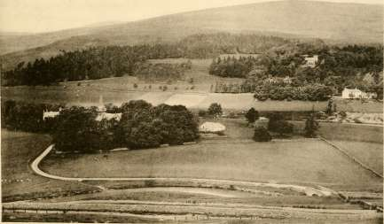

The earliest mention of any crest or armorial bearing attributable to the
family is the reference to a " William de Hopkelioghe, one of the tenants
of the King in the County of Peebles," who swore fealty to Edward I.
balm'sCalcnoar 0 f England at Berwick-upon-Tweed on 28th August, 1296. His Seal is
pp. 202, 583. described as "Vesica shape lion passant to Sinister," and lettered " Willelm
de Hopcailov." Hopkailzie was a very early possession of the Tweedie
family.
3Booft of ffila3ons In Sir David Lyndsay's register the Arms of Tweedie of Drummelzier
are given as :—" Argent a Saltire engrailed gules a chief azure." The
simplicity of this at once speaks for its antiquity, and this is the coat, with
various differences, that is found in use amongst all of the name.
In his well-known work on Scottish Arms, Mr. R. R. Stodart tells us that the Arms of Tweedie are cut in stone at Drummelzier Castle with a "bull's head" as crest and the motto " Thol and think." This has however now disappeared, and it may be doubted whether the crest stoBart Scottish was not a boar's head, which might easily be mistaken for a bull's head arms vol. it in rough sculpture defaced by weather and worn by age ; or it may be that the Drummelzier and Oliver branches of the family adopted different crests for the sake of distinction while in common with all other branches they used the same Coat of Arms. Mr. Stodart goes on to say :—" Mr. Laing described the Seal used in 1511 by John Tweedie of Drummelzier as a saltire couped with a fess (? Chief) charged with a mullet, crest a wolf's head. The Tweedies of Oliver bore the Saltire engrailed, but the Chief is omitted in the stones there where the arms are cut with the dates 1649 and 1734, and the crest is a boar's head couped with the motto "Tholl and think on."
•foouseor In the history of "The House of Cockburn" it is also stated that
Cochburn p. 207. . r , , . , _ .. . . _ , ..,
over the gate of the castle of the 1 weedies was carved the fierce bull s
head" with the motto "Thol and think."
The Arms are also emblazoned in the carving over the door at Drummelzier Church, and on the Tweedie tombstone in Peebles Churchyard, to which we shall presently refer.
Tweedie of Drummelzier was from very early times the dominant head of the sept, but it is doubtful whether the family in Oliver was not actually the elder line, although their rights as such were absorbed by their
Facsimile of Arms of Tweedie of Drummelzier from the Register of Sir David Lindsay, A.D. 1542.
Facsimile of Arms of Forbes of Tolquhoun from the Register of Sir David Lindsay, A.D. 1542.
powerful kinsmen, the Tweedies of Drummelzier, for as already mentioned, on the ancient stone at Oliver put up by Patrick Tweedie of Oliver in 1649 and still existing, the "Chief" is apparently wanting and the stone shews only a Saltire with the boar's head as a crest and the motto " Thole and think on," which would almost indicate that Oliver was the senior branch and that Tweedie of Drummelzier had originally sprung from a younger son and assumed the " Chief azure" as a difference. There is at Oliver, as well, a stone with the Arms of James Tweedie of Oliver, his own and his wife's initials, the date 1734, and the motto " Tholl and think on," while at Quarter is to be seen over the door a stone with the same family arms, " Argent a Saltire engrailed gules a chief azure," the date 1762, the names of Thomas Tweedie and Mary Stevenson, and the motto " Tholl and think on."
Lawrence Tweedie of Oliver had his watch and the family seals stolen late in the eighteenth century. The Tweedies of Oliver always carried the arms as " argent a saltire engrailed gules a chief azure " with the boar's head for a crest, and the motto " Thole and think on," as we have already mentioned.
On the death of Lawrence Tweedie, Oliver descended to Christian, his only surviving daughter. Her husband, George Stodart (who was as well a first cousin on the Tweedie side), took the name of Tweedie, which had also been that of his mother, in addition to Stodart, and assumed the arms, which the Tweedie-Stodarts still carry as follows :—
"Quarterly 1st and 4th counter-quartered, 1st and 4th Argent a fess nebuly between three stars of six points Sable a bordure gules for Stodart Xgon IReglster. 2nd and 3rd Argent a Chefron between three Bulls' heads couped Sable armed Vert for Turnbull, 2nd and 3rd Argent a Saltire engrailed gules a chief azure for Tweedie, crest a Boar's head proper with the motto, ' Thole and think on,' " as the same appears on seals still in the possession of Thomas Tweedie-Stodart of Oliver.
Tweedie of Quarter, a younger branch of Oliver, also carried the family coat, the Boar's head as a crest, and the motto, " Thole and think on," and at a later date Thomas Stevenson Tweedie of Quarter and Rachan, whilst continuing to use the same coat of arms and motto, adopted for a crest, instead of the Boar's head, a demi-lion holding an anchor proper, but for what reason is not known. Neither Drummelzier, Oliver, Quarter, nor any other branch ever appear to have gone through the formality of re-registration in 1672, probably on account of the troublous times through which the family was then passing, nor have younger sons matriculated, or no doubt a mark of cadency in each case would have been added. Captain Michael Tweedie, R.A., a younger son of Alexander Tweedie of Quarter, assumed in right of his wife Frances, the heiress of Richard Walter Forbes of Rawlinson,
Rolvenden, Kent (a younger son of Forbes of Watertoun in Aberdeenshire),
the arms of Forbes on an escutcheon of pretence over the arms of Tweedie,
and added as a mark of cadency a gun in the chief, adopted no doubt on
account of his being in the Royal Artillery. His descendant quartered the
arms of Tweedie and Forbes and matriculated them in Lyon Court as
follows:—Quarterly 1st and 4th Argent a Saltire engrailed gules a chief
Xgon IRegteter. azure also engrailed the latter charged with a fraise of the first for Tweedie,
2nd and 3rd counter-quartered, 1st and 4th azure three Bears' heads couped
Argent muzzled and langued gules, 2nd and 3rd Argent three Unicorns,
heads erased Sable for Forbes, crest a boar's head erased proper ; motto,
'Thole and think on.'"
At the time of this matriculation the arms of Tweedie were proved
back to Thomas Tweedie of Oliver, 1611, and any descendant of his is
therefore entitled on application to the Lyon Court, and proving his descent,
to matriculate the arms of Tweedie with a suitable difference ; the differences
or marks of cadency already added are a " fraise " in the chief, apparently to
denote the passage of the Coat from the Oliver family to that of Quarter
(a younger branch) ; and the engrailing of the chief, to designate the younger
branch formed by the marriage of Captain Michael Tweedie with the heiress
of Rawlinson, and the new branch thus formed; and no doubt these differences
or marks of cadency would be followed out suitably by the Lyon Court in
granting matriculation to any other members of the family who make
application. This Michael Tweedie, when a Lieutenant of Royal Artillery,
during the siege of Bayonne, in 1814, crawled in at night between the
French pickets to reconnoitre, and finding on his return that he had lost
his seals from his fob chain he bethought himself of the place where the
accident might have happened, obtained a lantern and actually returned,
searched for and found his seals, and got back to the English lines again in
safety. These seals he used to the day of his death.
Wtslt Esses [ n t ] ie Heralds' visitations of Essex under dates 1558 and 1612, the
TOarl. See. 1878
pp. 117=305. arms of George Twedye " who came out of Scotland from the house called
Drummelzier" are recorded as "quarterly 1st argent a saltire engrailed
gules a Chief Azure for Twedye ; 2nd Azure a Cross pattee ermine between
3 Cinquefoils or, for Fraser; 3rd Azure an orle sable within another of
Martlets of the 2nd a cresent for difference Winnington ; and 4th Azure
3 bears passant sable muzzled or for Berwicke; crest a bird rolant argent
for Twedye," from which it would seem that in right of the alliance in the
14th century with the daughter of Lawrence Fraser, the heiress of Drummelzier,
or perhaps in virtue of the then more recent marriage with the heiress of
Fruid, the family had quartered the arms of Fraser with their own, and that
the quartering was then still in use. It was this branch of the family,
founded by George Twedye in Essex, which flourished so eminently there,
OS tu H OS <
<y < S
OS
< o
h
< o o
h 2 W
u
<
w
h
u os
D X O
w
H .
N
<
OS N < J
O
H
< o u
H
2 W
o
2 <
a:
H
and from which sprang a long line of descendants, some of whom migrated
into Yorkshire and later on to Bromley and Widmore in Kent; and possibly
the Cornish family of Tweedy are also a branch of this house. Their
Arms are to be found on the ancient monuments at Stock Church and
Sampford Parva Church, in Essex, to which reference is made later on ;
they are perhaps the only existing branch that has an actual specific record
of descent from the Drummelzier family, and may be regarded as the only
existing known direct representatives of that line. How George "who came
out of Scotland from the house called Drummelzier" spelt his surname himself is
not known, and spelling was not of any importance in those days, but his son
Richard wrote it " Twedye," and his grandson William as " Twyddie," though
it is given " Tuedy" on his monument, and unlike their brethren in Scotland
who eventually called themselves " Tweedie," this branch finally adopted the
spelling "Tweedy." Arthur Hearne Tweedy, the present representative, -fo ZXd xVs Colleae
carries as his arms " Argent a saltire engrailed between two escallops in fesse Englano.
gules on a chief azure an escallop of the field." Crest, " on a prick spur
fesse ways a peewit rising proper holding in the beak a trefoil slipped vert."
In an English authority we find the Arms given of the Essex branch Sn aipbabettcal
r 11 , -r j i- r • -1 i i i • r » ©iCtiOttarg Of
as lollows: 1 weedy, r.ssex—argent a saltire engrailed gules a cruet azure coats of arms, crest, a Falcon rising, proper, and "Argent a saltire engrailed gules a chief. •*• ^ iP^pwortb. azure Ric. Twedy Hartford Stoke Essex."
On a letter dated 27th May, 1807, written by a J. Tweedy from Stinfold Horsham to a William Tweedy (of the Cornish branch) is an impression of the seal bearing a boar's head with the motto " Thole and think on," and the initials J. T., whilst the late Henry John Tweedy, of Lincoln's Inn, a member of the Cornish branch, had in his possession old seals showing the usual Coat of Arms of the family, viz., " Argent a saltire engrailed gules a chief Azure," but with an arm, armed, proper, couped at the shoulder, holding a dagger and protruding from a cap, for a crest, with the motto " Rappe fort virtus sit dux," which establishes the presumption of kinship, although the earliest record of this branch is of a " Mr. Tweedy," who must have been born about the year 1640, and from him descends a long line of the name who have attained to eminence in Cornwall. William Tweedy, the first of this family who settled there, was a prominent member of the Society of Friends and of the Cornish Bank; his son, William Mansell Tweedy, was also a most prominent public man, being at one time or another of his life connected with almost every local institution of the county, Chairman of the Cornish Railway Company, a founder and President of the Royal Institution of Cornwall, and treasurer of many county societies, and there is a memorial window to him in Kenwyn church. Robert Tweedy, another William Tweedy, and Robert Milford Tweedy were no less distinguished, and the present members of the family are their worthy successors.
K*
'34
Henry Colpoys Tweedy of Cloonamahon, in the County of Sligo,
and of Crusheen, in the County of Clare, Ireland, carries the family coat
in his arms, viz., Quarterly i and 4 Argent a saltire engrailed gules, on a
chief azure, three fleams or (for Tweedy) 2 argent on a saltire sable five
Ullstcr ©ffice of trefoils slipped or, on a chief gules, three cushions of the third (for Johnston)
3 argent a maunch ermine (for Lolpoys), and upon an escutcheon of pretence
the arms of Meredith, namely, azure a lion rampant per pale argent and
or crest a dove volant argent Motto " Fais ce que doit advienne que pourra."
This branch traces its descent from Thomas Tweedy, Alderman and
High Sheriff of Dublin about 1775, a very distinguished man who is
described in the records of Dublin City as having obtained the freedom of
the City by Special Grace, but at present there is no knowledge of the
forefathers of this Thomas Tweedy.
A seal which had belonged to an ancestor of the late Alexander Leslie
Tweedie of London shows the arms of Tweedie impaled with those of a
wife, and a palm and laurel branch crossed, for a crest, with the motto,
" Aut pax aut bellem ; " and in Burke's general Armory we find, " Tweedie
$urfte's ©eneral (London) Or a Saltire engrailed gules on a chief azure t. antique crowns of armors. x ' s & . .
the first; crest, a palm branch and laurel branch in Saltire vert ; Motto,
"Aut pax aut bellum."
General William Tweedie, C.S.I., has in his possession an ancient seal handed down to him through his father the Rev. William Tweedie of Edinburgh, and his father's father before him, shewing as a crest " a demi-lion holding an anchor 5 ' with the motto "Fide et Fortitudine," the crest being the same as that which Thomas Stevenson Tweedie of Quarter adopted in lieu of the boar's head, though the motto is different.
In the Spectator, under a discussion on the definition of a "gentleman," the editor of that paper observes:—
" To make the right to coat armour the test of a gentleman is of course supremely ridiculous, but to say this is not to deny the great interest and value that attach to heraldic and genealogical research. A man should know as much as he can about his ancestors, and has every right to be proud of a long sequence of armigeri. But the longer and better a true bred Englishman's blood and pedigree, the less will he want to take away the name of ' gentleman' from those who deserve it on grounds of nature, conduct and bearing ;" with which sentiments we fully agree.
The ancient tombstones and memorials of the Tweedies are but few. Chambers says of the family, " their principal place of sepulture was a vault in the old church of Drummelzier where was carved their coat of arms bearing a fierce bull's head with the motto, ' Thol and think,' an admonition singularly at variance with the impetuosity of their character." It is not very
Spectator ffeb. 9tb 19CH.
THE OLIVER STONES AT TWEEDSMUIR CHURCH.
THE TWEEDIE STONE IN THE YARD OF SAINT ANDREWS CHURCH, PEEBLES.
certain to what Chambers refers, but there is yet to be seen over one of the doors of Drummelzier church, embedded in the old wall, an ancient stone upon which are carved the arms, with the Saltire engrailed, the motto, " Thol and think," and the legend "Hie jacet Honorabilis Vir Jacobus Tweedie de Drummelzer, obit 29th July, 1612 ;" and, according to an old MS. note, dated 3rd February, 1840, this stone was at some previous date found in the aisle at Drummelzier church and put over the door, it is supposed by one of the heritors.
In Tweedsmuir Churchyard there is a stone known as the "Oliver" stone with the following inscription: " Here lyes Patrick Tweedie and his son John, both of Oliver. Thomas Tweedie of Oliver, who died 7th May, 1731, aged 75, and Christian Williamson, his spouse, 13th May, 1709, aged 51. James Tweedie of Oliver, 10th August, 1753, aged 70, and Margaret Ewart, his spouse, 1st February, 1772, aged 85; Margaret, his daughter, 23rd November, 1774, aged 49; Christian, her sister, 13th March, 1775, aged 52; Thomas Tweedie of Oliver, who died 6th March, 1803, aged 75 ; Jean Brown, his spouse, who died 1809; Lawrance Tweedie of Oliver, who died 25th January, 1837, aged 70." On this stone are the lines:—
" Death pities not the aged head, Nor manhood fresh and green, But blends the locks of 85 With ringlets of 16."
It is noticeable that the date of the death of Christian, the wife of Thomas of Oliver, which should be 1709 as given above and as is shown by the parish registers, has been inadvertently changed at some time to 1700 on the stone, an easy error to fall into when clearing out or restoring the letters.
In Tweedsmuir Churchyard there is a stone known as the "Quarter" stone which bears the following inscription: " Here lyes Thomas Tweedie of Quarter, second son of Thomas Tweedie of Oliver, who died 9th February, 1776, aged 75 years, as also Mary Stevenson, his spouse, who died 3rd February, 1784, aged 83 years; also Alexander Tweedie of Quarter, their son, who died 13th February, 1803, aged 57 years; and Anne Carmichael, his spouse, who died 11th March, 1836, aged 77, and their son Michael, 4th May, 1789, aged 3; and to the memory of their son, Lieutenant Alexander Tweedie, Madras Army, who died at Ellichpore, 19th November, 1818, aged 29."
In regard to this stone also it may be pointed out that the parish registers give the 6th of January, 1784, as the date of the death of Mary Stevenson, the date on the stone being probably the day of her burial.
There are more stones in both this and other churchyards, and several members of the family have of late been buried in the private burial place in the grounds of Rachan House.
Cbainbera' T n tne burying ground of St. Andrew's Church, at Peebles, is a stone
Ipeeblcasbtre . J ,° °
p. 291. which is characterised by Chambers as perhaps the oldest of several of the
more interesting of the old monuments there. It bears the name of
John Tweedie, who died 1699; another John Tweedie, Provost of the Burgh,
who died 1712, besides wives and daughters. In allusion to the number
who have been conveyed to the dust the following lines are yet to be
read:—
" A silent scattered flock around they lie, Free from all toil, care, grief, fear, envy, But yet again they all shall gather'd be When the last awful trumpet soundeth hie."
The armorial bearings of the family are engraved on the stone, which
abounds as well in quaint sculptured figures emblematical of the four seasons
—a husbandman in the act of sowing; a woman with a garland of flowers ;
a young man with a reaping hook over his arm ; and a boy with his fingers
in his mouth, representing winter ; it also contains an instance of that curious
symbol 4 X which is found on many of the gravestones erected about 200
jEtiinburgb years ago all over the Lowlands of Scotland. Part of the inscription on
architectural . T ,.
Socfetg's SRctcb this nne example of a throuch or altar tomb runs thus : Here lies
JBooft 1883*1886. j ohn Tweedie, late Baillie in Peebles and 4 X," and it is believed that so
far no solution of this mark has been arrived at.
A stone in Broughton Churchyard bears the following inscription:—
1R. 0. 5. 1609=1620 p. 644.
It is understood from enquiry that this stone had been brought, whence it is not known, and set up in the churchyard. It apparently has reference, from the initials on it, to a George Haddon, who married a Nicole Tweedie, and George and Nicole are no doubt the same persons referred to in the Crown Charter before mentioned, dated 19th February, 161S, whereby King James confirmed an indeftment by George Haddon under a contract of marriage dated 5th August, 1596, giving to Nicole Tweedie, his spouse, lawful daughter of the late Adam Tweedie of Dreva, half of the lands and Barony of Brouchton, with the Manor place, for her life. This was done at the Manor of Brouchton on the 27th August, 1606, in the presence of
to in
w
w (/)
D O
a j
ui m
2
W Q to
< K
I
O
Q
« < > OS < X
u o
H V)
b
o
as o
K X
u
w x
0)
in
< K at
ui
x
t-
Archibald Douglas, Archdeacon of Glasgow, and William Tweedie of the Wrae. The Haddons were a very old family in Broughton, dating back at least to the days of David II., and possibly the above stone was originally used not as a churchyard memorial stone but on some house built by George Haddon and Nicole Tweedie in 1617, and afterwards inhabited and repaired in 1725 by Richard, Andrew, William, James, and David Tweedie, but who the latter were is not known for certain, it is likely that they were of the Dreva branch.
There are no tomb stones or memorials in Tweeddale of more ancient date than the above, and, indeed, it is likely that in earlier days those who were slain in the frequent quarrels were buried where they fell, and those who died in their beds lie in some quiet place on the hillside near at hand, all trace of which is lost. There must be many such forgotten resting places throughout Scotland.
It will be remembered that a member of the family emigrated from Drummelzier in the 15th or 16th century to England and founded the branch of Tweedy of Essex. In the church of Stock Harvard cum Ramsden Bellhouse, in Essex, is still to be seen the brass erected to the memory of Richard Twedye, who died in 1574, though it is curious that there is no notice whatever of his burial in the Register Book. This brass consists of the coat of Arms at the top, then a full length effigy in complete plate armour, and at the bottom the following inscription :—
" The corpes of Richard Twedye, Esquire, lyeth buried here in tombe, Bewrapt in clay so reserved until the joyeful dome ; Whoe in his lyffe hath served well against the Ingleshe foes In forren lands, and eke at home his countrye well yt knowes, The prince he served in courte full long a pensioner fitt in personage, In his Country a Justice eke a man full grave and sage, Foure almes howses here hath he builte for foure poore knightes to dwell, And them endewed with stypendes lardge enough to kepe them well, In ffiftye eyghte yeares his course he ran and ended ye 28th of Januarye, 1574."
In the arms is to be noticed the coat of the family, the blazoning being Quarterly 1st Argent a Saltire engrailed gules a chief azure for Tweedie, 2nd Azure a cross pattee ermine between three cinquefoils or for Frazer, 3rd Argent an orle between eight martlets sable for Winnington, and 4th Azure three bears muzzled or for Barwick with (apparently) a falcon, with outspread wings as a crest, the motto is omitted. This brass is affixed to the South Wall, it is about 3 feet high by 18 inches wide, and the stone in which it is fixed is the old altar, as is shewn by the five crosses, two of which only are visible, one being under the brass and the other two cut off by the curve.
The monument of William Twedy, a son of this Richard Twedye, stands in the church of Sampford Parva in Essex. On this tomb are the
arms of the family, in colours, Argent a saltire engrailed gules a chief azure, with the differences of the border of the shield being also engrailed, and the whole surrounded with a bordure ; a falcon with outspread wings for the crest appears in bold relief at the top, the motto again being omitted. Underneath William Twedy and his wife are portrayed in profile, both kneeling, he on the left, she on the right, facing each other, he in plate armour, and both in the ruffs of the period with a prayer desk between them. Below runs a long inscription in Latin, the translation of which is to the following effect:—
" Here lies the body of William Twedy, Esquire, who distinguished himself as a military commander first under Queen Elizabeth of glorious memory in suppressing the tumults in the north of England, next under the invincible hero the Lord Baron de Willoughby in France, and lastly under the auspices of the illustrious Earl of Leicester in the Netherlands, and was Warden of the military works at Bergen-op-Zoom. He married firstly Mabell, the daughter of Sir Henry Curwen, Knight, of the County of Cumberland, by whom he had one son and one daughter, and afterwards married Margaret, the daughter of Rooke Green, Esquire, of Sampford Parva, in the County of Essex, by whom he had three sons and twice as many daughters. He died on the 7th July, 1605, whose soul rest in peace."
In the church of St. Mary, Castlegate, York, is a tablet to the memory of Elizabeth, the wife of John Tweedy, upon which again appear, with those of his wife, the arms of the husband as argent a Saltire engrailed gules a chief azure, but without any crest or motto; on the tablet is the following inscription, " In memoriam Elizabeth Joannis Tweedy Arm. Ebor. uxoris Semper deflendae quae turn vi Animi pene plus quam muliebri turn eximia morum suavitate praedita est et omnes officii partes quas matrem at que uxorem praestare oportebat cumulate explevit Hoc Marmor Moerens Posuit Maritus. Nat VI. Non IVL. MDCCLXX. OB. III. Non. Dec. MDCCCXI."'
The family of Twitty of Worcester are a branch of the Tweedys of Essex, as appears from the Visitations of Worcestershire in 1682-3, edited by Walter C. Metcalfe and privately printed in 1883, where their pedigree is given commencing with " Twitty alias Tweedy, a younger son of the Tweedys of Essex."
It may not be here amiss to record that Melrose Abbey, that great memorial of Scottish architecture and ecclesiastical history, owes its existence to an ancestor of the family. A Charter granted between the years 1291 and 1306 runs thus:—"To all the sons of Holy Mother Church present and n^tia im "mb M future who shall see or hear the present writing, Symon Fraser, knight, son p. 319 IRo. 356. and heir of the late Sir Simon Fraser greeting in the Lord;" the document then goes on to confirm the lands of the Abbey " to God and to the Church of St. Mary of Melros and to the Monks serving and to serve God there
for ever" (alas for the vanity of human aims), " to hold and have to the said Monks as freely, quietly, well and in peace as in my Charter which I have thereupon from Sir Lawrence Fraser, late Lord of Drummelliare." Simon Fraser's Seal is appended to this charter, to which the witnesses are Sir Andrew Fraser, Knight; William Perer, late Sheriff of Tweeddale ; Stephen of Glenquholm ; Robert Hastinges; Patrick of Malville; Michael of Hytteton ; with sundry others. It will be remembered that Simon Fraser was the" father of the heiress who brought Drummelzier into the family and thus became the ancestress of the main stock of the family of Tweedie.
CHAPTER VIII.
P 1
•foist. & lpoettg Scot. JSorocr, vol. it. cbap. t.
THE TOWERS AND HOMES OF THE FAMILY.
ROFESSOR VEITCH, who knew every foot of the district, tells us that the abandoned towers or dwelling places standing in Tweeddale still form one of the most characteristic and suggestive features of Tweedside. The ruined Border peel meets you, he says, on many a knowe, but as a rule not much of it remains. In many cases the tower itself, with the quaint human life carried on within it, the comfort or what little there was of it, the terror and alarm, the hopes and fears, the courage to face danger, all have equally passed away, and seldom now have we aught but the solitary ash, whose roots are enwoven beneath the green mound, where once the hall was bright and the hearthstone gleamed.
The word " peel," which is universally used of these Border Castles, is the same name as the Cymri gave to their hill dwellings. " Pill" in British and Cornish, as well as in the language of ancient Gaul, signifies a moated or fossed fort, and like the old circular forts of the Cymri, the mediaeval towers are built carefully in sight of each other and may be traced all the way up the valley of the Tweed, from Berwick to the Beild, near Oliver. The Professor considers that it would be difficult to fix the exact date of the erection of any existing building or ruin in the shape of a Border Castle. They were so frequently destroyed and rebuilt in the reigns of the early Stuarts, that we must, he considers, regard what remains of them rather as representing to some extent the more ancient form of structure, than as the actual buildings of the time of Robert the Bruce and his son.
From the earliest days of mediaeval times the Castles and Strongholds Scottteb ffiorocr. were the characteristic features of the old Scottish landscape. Alexander Hume of Polwarth in his poem, "Thanks for a Summer Day," written in the days of King James VI., refers to them :—
" The rayons of the sunne we see
Diminish in their strength ; The schad of everie towre and tree,
Extended is in lenth ; Great is the calm for everie quhair
The wind is settin downe; The reik thrawes right up in the air,
From everie towre and towne."
"fotet. & fl>oetrB
THE RUINS OF TINNIES CASTLE.
THE SITE OF TINNIES CASTLE.
Very few of these old towers are now entire. The professor draws a striking picture of what one was like in the days when they formed the only ~^ ist - * ^f ct> residences of the inhabitants of Tweeddale. The external appearance was vol. ii. cbap. 1. that of a solid square mass of masonry, generally the greywacke of the * district, perforated with holes, or boles, which admitted air and light and also served for defence. It was usually perched on a knoll or eminence, perhaps the top of a scarped rock with a craggy face; the Tweed itself, or one of the tributary waters or burns, flowed near; some birches and hazels, an ash or an elm, dotted the knoll ; and on the green braes a few sheep or cattle quietly pastured.
These towers were usually places of great strength and were seldom fjjg^ & ipoctrg
of more than three storeys. The lowest, or apartment on the ground floor, °ftbe
11 1 j ii c r . ■ . 1 Scottlsb ttoroer.
was almost universally vaulted; and this was frequently the case with the
storey immediately above, forming the hall or dining room. The ground
floor apartment was probably the storehouse for the Martinmas Mart and
winter provisions generally. It might in some cases have been a refuge
for the cattle about the tower in times of danger. Occasionally there were
two vaulted chambers on the ground floor, divided by a thick wall, as in
the ancient Castle hill of Manor. The second and third storeys accommodated
the family, with what comfort or decency it would be, perhaps, painful to
imagine. There was usually a narrow spiral stair leading to the top, on
which there were projecting battlements, often machicoules, and in the
centre of the space there, a kind of gabled cattage, which served both
as kitchen and watch tower. Here also on the top or roof storey of the
peel was the bartisan, the passage round and behind the battlements, which
served as a place of outlook, and also as the withdrawing room for the
ladies of the household on a quiet summer afternoon or evening. On the
edge of the upper wall or roof, or attached sometimes to the chimney, hung
an iron cone, sunk in an iron grating, " the fire pan," filled with fuel, peat „ , ,
s & r \ Scottleb
and pine root, ready to be lit at the moment of alarm. The tower had Bnttqutttcs,
generally two doors, an inside wooden one, of uncommon strength, studded
with iron nails with broad heads, and an outside iron gate that opened on
the inside. One of these doors and gates was preserved in the Parish of
Broughton for a long time as a piece of antiquity, and was seen by many
persons so late as 1793. "These Castles," says Dr. Johnson, "afford another
evidence that the fictions of romantic chivalry had for their basis the real
manners of the feudal times, when every Lord of a Seignory lived in his p cnn e CU jk
stronghold lawless and unaccountable, with all the licentiousness and ftweeooalc
.... , P- 255.
insolence of uncontested superiority and unprincipled power." There was
usually a court yard in front of the tower, surrounded by a wall called the S )ts !:^®? et : 3 J ' J Scottfsb JBorocr
barmkyn, the access to which was through a strong iron gate or studded vol. it., cbap. i. oaken or ashen door. According to the Act of Parliament, 12th June, 1535, '
the wall of the barmkyn was to be one ell thick, roughly, thirty seven inches, and six ells in height, that is, over eighteen feet. The space enclosed was sixty feet, and within this the cattle could be driven at night, or in case of a surprise. Inside or around the courtyard enclosed by the barmkyn were the huts or dwellings of the immediate retainers of the family.
The internal fittings of these towers were, no doubt, rude enough. The upper or convex part of the vaulted roof of each storey was usually covered with a wooden floor, and, as a precursor of the modern carpet, the boards were generally strewn with the bent grass of the moors, or the rushes of the haughs. With these would be mingled sweet smelling herbs, such as thyme, bed-straw, or fresh heather. The fragrance of the hillside would thus at least for a time be felt in the narrow and ill-lighted rooms. Glass was rare and costly, and the narrow boles that served for windows were either left wholly open, or they were fitted with a board that served as a shutter. Well on into the time of the Stewarts " glessin-work "— opus vitreum —was found only in the houses of the wealthy. Gawain Douglas, in his famous prologue, on Winter, prefixed to the Seventh Book of the /Eneid, speaking of getting up in the raw winter morning, tells us that he:—
" Bad beit the fyire, and the candill alycht Syne blessit me, and, in my weydis dycht Ane schot wyndo unschet, a lytill on char Per saivit the mornyng bla, wan and har."
This window, evidently without glass, was common at the time, and the lines almost give a chilly feeling of the cold raw air entering in the early dawn of winter, through the " unschet" or open aperture that served to admit light and air.
The significant feature of the picture, when these peels were the important points of the district, is that of the iron cone sunk in the iron grating which holds the bale or need-fire, the meaning of the word being originally a flame, a blaze, then signal fire. To quote the old Border Law, " And in the time of warfare, the beacon ... in the fire pan be keeped, and never fail burning so long as the Englishmen remain in Scotland; and with one bell . . . which shall ring whenever the fray is . . . and whoever bides from the fray, or turns again so long as the beacon burns, or the bell rings, shall be holden as partakers to the enemies, and used as traitors."
No signal ever stirred the breast more deeply, or told its story more clearly and picturesquely than that glaring bale-fire. It did its work with incredible rapidity—a rapidity quite telegraphic. Each tower was situated so as to catch the warning from its neighbour at a distance frequently of only 2 or 3 miles. When of an evening at the Fireburn, near Coldstream, the bale-fire flared out, the answering flame rose and was seen so speedily
THE SITE OF OLIVER CASTLE.

TWEEDSMUIR CHURCH, WITH OLIVER HOUSE IN THE DISTANCE.
all up Teviotdale, up Ettrick and Yarrow, and up Tweeddale to its furthest wilds, that by the early morning ten thousand armed men have been known to meet together at a single place of rendezvous.
Professor Veitch, from whom we have quoted, ends with the following fine reflections : " It was the flame of the beacon fire along these valleys and streams, so often lit, which fused the people into a common body, kept them true to their allegiance to the Scottish king and the Scottish nationality. Hate and resistance to the Southerner, the common interest of self-defence, banded them into a unity among themselves, and kept them from breaking off from the king who nominally reigned over them, but really only ruled in Fife and the Lothians. He was to them a rallying centre against a common and powerful foe, and little more than this. The 'Hammer of the Scots' and those who kept on hammering, while they thought to break, only welded them at every stroke into a harder and more inseparable nationality."
And if it thus formed the national character so did it that of the individuals. In the letter written to Pope John XXII., in which the people of the country ask him to require the English king to respect the independence of Scotland and mind his own affairs, they say, " So long as a hundred of us are left alive we will never in any degree be subjected to the English"; and they never were.
Tradition unmistakably points to Tinnies Castle as one of the earliest strongholds of the Tweedies, or of those who afterwards came to bear that surname when surnames came into fashion, and although Chambers says there is no historical record, we do actually find in the register of the Great Seal John Tweedie described as Lord of Thanes Castle in Drummelzier in IReg. (Sreat Seal the Charter granted to him by James IV. of the Home Huntaris lands in *i 0 3568 the Barony of Innerleithen.
Tinnies Castle stood at the opening of the highway down the Strath of
Biggar Water to the Tweed, and is not improbably the Fort of Tweed ^ e £ W ee&, £ C , (
referred to as Alt-Teutha in one of the oldest Ossianic poems entitled " Calthon Professor Wcltcb
. P« 215.
and Colmal." When speaking of the upper reaches of the river, Chambers,
. . . . Cbambcrs' "feist,
in his history of Peeblesshire, says of this place, that in no part of Scotland pcebleesblre
was there any feudal keep so like a robber's castle on the Rhine as that of p '
Tinnies, which, occupying the summit of a lofty knoll, towered over the
plain of Drummelzier, and was in all respects a fitting residence for one
who set the law at defiance. Tinnies, or Tinnis, is, it is suggested, a
corruption of Dinas, which is one of the Generic names in Cymric for a
fort; it is also supposed to be a corruption of " Thanes" Castle, and the
remains are of such antiquity that there is no record of its erection, or
destruction—at least so says the New Statistical account of Scotland; but
at all events there is in existence the royal warrant for its demolition during gSt^&^utt
the occupation of James Stewart, dated 13th July, 1592, at Peebles, when P-73.
the fortalice was to be "cussen down to the ground." George Chalmers, in his Caledonia, says, " it was the residence of the Tweedies who domineered there through ages of anarchy," and Chambers and Pennycuik both also state that Tinnies was originally the residence of the head of the clan Tweedie. Tradition names Udard, a second son of Gilbert Fraser of Neidpath, as its builder some time in the 12th century; but whether he actually built the castle or merely repaired and strengthened it is doubtful. A great quantity of boars' tusks and of the bones of other animals has been dug out of the hill on which the ruins lie, and old John Fleming at Drummelzier says there were also human bones amongst the rubbish carted as manure for the Drummelzier Haugh field, and that the quantity of these was so great that the farmer had to have them buried in the churchyard. There is also an old legend of a secret passage between Tinnies and Drummelzier, as well as of a great cave close to the former castle, and the suggestion might be hazarded that it was a vault for sepulture, as evidenced by the bones. Udard, the possible builder of Tinnes, is sometimes spoken of as Udard the Dane, which may furnish a possible clue to the name as originally Danes Castle, hence Thanes and Tinnies. It must have been a place of greater strength than the ordinary feudal keeps in Peeblesshire, for the walls are two Scots' ells thick, and the cement as hard as the stone. It is said to have consisted of a quadrangular enclosing wall between 6o and 70 feet square, with round towers 18 feet in diameter at each angle. The tower at the northern angle was still standing in 1834 to the height of about 5 feet, and had three shot holes in it, and the foundation of the western tower was also then visible, while there were traces of the other two. The walls of the towers were about 4 feet thick and the "curtains" between them about 5 feet thick. The remains now consist of only a few broken but durable fragments of wall, and are reached by a zig-zag pathway up the steep bank which in the present day is reduced to the nature of a sheepwalk. The view from Tinnies Castle hill is one of the finest in the district.
Pennecuik, in his Tweeddale, and Chalmers, in his Caledonia, say that Neidpath Castle was also at one time a residence of the Tweedies, but if so it must have been in very early days. Neidpath occupies a striking situation on the north bank of the Tweed, at a distance of one mile westward from the town of Peebles, is backed with woody hills, has an open prospect to the east, and consists properly of two castles united. Originally the structure had consisted of a tall border tower or peel, each storey vaulted, and with a spiral stair communicating with the different floors. The south side of the ancient tower is entirely gone, leaving a series of vaulted floors one above the other, and the fallen wall lies in large fragments at the bottom of the cliff near the Tweed. When Tweedies
OLIVER HOUSE.
--: i
RACHAN.
had their abode at Neidpath it must have been in the old peel, and not in the castle as it now stands.
Far up the Tweed in the Parish of Tweedsmuir, almost opposite the church and adjoining the Beild, on a rocky shoulder of the hill, with an outlook eastwards over the valley, is the site of Oliver Castle, of which not a single fragment is now standing. Oliver was a very early possession of the family, and it is possible that here resided the ancestor who married Sir Simon Fraser's daughter, or grand-daughter, the heiress of Drummelzier. It must have been originally a very strong place both from its position and from its size, which is still apparent, although only an indistinct outline and a few stones are to be seen, while the site is covered by trees. The place is known locally as "The Leddy Knowe." Curiously enough no relic has been found about this site except a pair of thumb-screws, an instrument of torture used even as late as the times of the Covenanting persecution. It is more than likely that many of the stones were used to build the house of the Beild in 1726, and the new Oliver house in 1780.
Not far from the site of Oliver Castle, and on Over Oliver, stands the present house of Oliver surrounded by trees and gardens and overlooking the river. This house was built by Thomas Tweedie of Oliver, about the year 1780, to replace the old house, of which traces still remain in the ancient stones with the arms carved upon them built into the present buildings, and which are referred to by Stodart in his work on Scottish Arms as bearing the dates 1649 and 1734. The building of this house was evidently going on in the year 1790, for it is mentioned in the correspondence that passed between Thomas Tweedie of Oliver and his son Adam Ewart Tweedie, and previously to this there is said to have been another Oliver house, on higher ground, but still on Over Oliver, probably built when Oliver Castle became no longer habitable. Near Oliver is the house of the Beild, which was built by James Tweedie of Oliver in 1726; over the door is the inscription, J.T., 1726, M.E., meaning James Tweedie and Margaret Ewart.
Drummelzier Castle, however, as one of the homes of the family, rouses lpennccutk the chief interest, for it is here that the head of the family is found seated p, 253 &c. during the most prominent period of the family history.
Chalmers in his Caledonia says the singular name of Drummelzier "Galeoonta," (pronounced drummellier) arises from the ridge lying to the northern end °f nM 31 ^l^os the parish, and it has been suggested that it means the ridge of Melzier or Meldred, who is said by some to have been a great chief of the district, drum being the generic part of the word. Drym in British and drum in Irish both mean a ridge. The affix Melzier, or Meldred, is not so easily explained, however, if it be not accepted as the name of a person ; drum'eallur, in the Irish, would signify the ridge of earth or the earthern ridge ; but the whole ^cct'orB of word is possibly the. British Drym-Meillaur, meaning the dwelling on the Scotland p. 9S
ridge. The oldest form of this name which appears in writing is Drumedler. Fordun gives Dunmeller, melr being old Norse for bent grass, but this is probably an inaccuracy in the spelling.
Whatever may have been the date of the original building that stood upon the site of the peel of Drummelzier, the present Castle, commonly called Drummelzier Place, is considered by those qualified to judge to have been erected or restored to its present form about the end of the 15th century, very possibly in consequence of the various edicts issued about that time by the King, for the repairing and strengthening of all the Border fortresses. It stands upon a low rocky knoll close down upon the Tweed, and is shattered and ruined and much gone on the western side, but there is sufficient to show its original height and character. The angle tower and a portion of the main building alone now remain ; the wing is vaulted and provided with shot holes, and each window is also furnished with a shot hole under the sill. By an inlet from the Tweed it could be surrounded with water. Chambers in his history of Peeblesshire thinks that it probably suffered bombardment by the troops of the Commonwealth at the same time as Neidpath Castle, and remarks that its shattered side is towards the low hill of Rachan whence it could be attacked by cannon. Since its ruin its stones have unfortunately been used for the farm steadings near, and it is a matter of regret that some effort could not be made to secure it from further dilapidation, for historically it possesses an interest equal to that ot any ruin in the county. Seen from the bend of the Tweed, opposite the Castle, the view is very fine, reminding one very distinctly of the Rhine scenery. The Castle is discovered to sight from far down, and at that particular place the Tweed has a most picturesque sweep.
On Fruid Water, one of the earliest tributaries of the Tweed, the name meaning the impulsive, or hasty water, far up in the wilds of the Parish of Tweedsmuir are the remains of Fruid Castle, constantly mentioned as one of the strongholds of the Tweedies. Little now remains of it, and that little is hidden in the trees surrounding the ancient site. It was once, no doubt, of considerable strength, partly on account of its position in the wild and inaccessible district where it stood. Traditionally it is said to have come into the family through the same alliance with the Frasers as brought in Drummelzier, but it is more likely that it came by the marriage that ensued from the feud with the Flemings in the 16th century.
Fruid formed almost the last of the string of fortresses for common defence along the Tweed. It looked to the castle of Hawkshaw ; Hawkshaw looked to Oliver Castle; Oliver to Polmood ; Polmood to Kingledoors; Kingledoors to Stanhope ; Stanhope to Mossfennan ; Mossfennan to Wrae and Drummelzier ; Drummelzier to Tinnies, Dreva, Lour, Dawyck, Stobo, and so on all the way to the Mouth of the Tweed.
RAWLINSON HOUSE.
THE HOO, KEMPSTON, BEDFORDSHIRE.
In the Parish of Glenholm in Peeblesshire, a little South ot Rachan ilbambcrs' and nearly opposite to Drummelzier Castle, overlooking the Tweed, is Wrae p C |^L es6bire Castle, or rather the ruins of it, for it is reduced to a single fragment, which is striking from its strangely isolated condition. The sole remaining portion of the old feudal keep is the angle of the building which had contained the stair, and being additionally strong on this account, it has been more successful in defying the weather and time than the rest of the building. Wrae was for many years one of the strongholds of the family, and was usually occupied by a near relative of the head of the sept, and after the loss of Drummelzier Castle the representative of the Drummelzier line appears to have retired to this Tower.
On the face of the hill beyond the Stobo Slate Quarry, on the high ground overlooking the plain of Drummelzier, is Dreva, formerly one of Cbambere the fortalices of the Tweedies. Of the peel itself, however, nothing remains, V- +39 although near by is the British hill fort of Dreva Craig. It also was usually occupied by one of the near relatives of Tweedie of Drummelzier.
Another ancient residence of the family was the House of Halmyre
in the parish of Newlands. It passed, however, out of the hands of the
Tweedies in the first quarter of the 17th century, on which occasion it will
be remembered that certain members of the family attacked the newlv ® xiv V Counc "
J IRecorOs. installed owner with swords and other weapons and nearly killed him. The
house stands on the banks of the Lyne Water in a district which was originally
a dismal swamp, and, as Chambers says, evidently takes its name from the
marshy character of the ground in which it was placed. The old house
of Halmyre stood on a kind of slight eminence, and was a vaulted and
defensible fortalice, not easily assailed. The present building, which is the
result of restoration in the middle of the nineteenth century, consists in
the lower storey of two vaulted apartments, relics of the ancient feudal
keep, which Pennecuik says was built by the "eminent and powerful Baron lP c ""ccu(f?
r . ,i {Tweefc&ale"
Tweedie of Drummelzier." p. 175.
Kingledoors, now a farm house, lies at the junction of the Kingledoors Burn with the Tweed and opposite Stanhope, in the Parish of Drummelzier. In ancient times the upper part of the Strath of Kingledoors was noted for a chapel dedicated to St. Cuthbert, but this has long ago disappeared. There are many records of the occupation of Kingledoors by various members of the family. In old documents the place is usually described as Chapel Kingledoors, and near it stood another dwelling, called Craig Kingledoors. The name is an excellent example of the Celtic original, cinn gill dor —" head of the clear water."
Patervan, sometimes spelled Putervan and Potervan, close to Kingledoors on the opposite side of the Tweed, was for man}' years the residence of generations of Tweedies.
Hearthstanes, in the parish of Tweedsmuir, was long occupied by Tweedies. In the extraordinary litigation which took place in the year 1780 about Polmood, a neighbouring property, Margaret Tweedie, " the guidwife of Hearthstane," is referred to as the niece of Uncle Robert Hunter, the owner of the wonderful dog Algiers; and when Uncle Robert grew old the guid wife of Hearthstane took care of him until his death ; Hearthstanes, or Hairstanes, as it is now called, was, until quite recently, in the occupation of Alexander Gladstone Tweedie.
Quarter, which stands in the parish of Glenholm, between Biggar Water and Holms Water, came into the hands of the Tweedies about the year 1740, when it was acquired by Thomas Tweedie, the second son of the Thomas Tweedie of Oliver. Chambers says, " this may be called the beginning of a new branch of the Tweedies, who by descent claim to be representatives of the ancient Tweedies of Drummelzier." The house, which has been well restored, is a good example of its kind, with the curious turret so often seen in Scottish and French architecture.
Rachan House stands at the junction of the Holms Water and Biggar Water with the Tweed in the parish of Glenholm ; the present residence was practically built by Thomas Stevenson Tweedie of Quarter, who acquired the property on his return from India, and the work was completed by his son, James Tweedie of Quarter and Rachan, with the result that it is now one of the finest places of its kind in the county, surrounded by large gardens and a fine park, with a picturesque lake in the grounds.
Many other places were also possessed or occupied by the family in Tweeddale, such as Whitslaid, Glenrath, Menzion, Hall Manor, and others, which for long years at one time or another were connected with the family.
As has been elsewhere mentioned, a member of the family of the Drummelzier branch migrated to England and settled in Essex early in the 16th century. His actual relationship is not known, but he is referred to in the Herald's Visitations for Essex as " George Twedy who came out of Scotland of the house called Drummelzier "; his descendants lived at Boreham Stock Harvard cum Ramsden Bellhouse, and at Sampford Parva in the County of Essex, and later on an elder son, John Tweedie, and his son, John Drummelzier Tweedie, were resident at Warley House, Halifax, in Yorkshire ; they were both Justices of the Peace and Deputy Lieutenants for that County, and that branch expired in John Drummelzier Tweedie, who died without issue. A younger son, Colonel George Tweedy, settled at Bromley, Kent, where the family has been resident ever since, and is now represented by Arthur Hearne Tweedy of Widmore Lodge, Widmore, Bromley, Kent; this family also owns the estate of The Hoo, Kempston, in Bedfordshire, with the manors of Kempston Greys, Hardwick and Hastingbury, as well as the house of Widmore House, Bromley, Kent, where they have long been
ELMSHURST, CHATHAM, NORTHUMBERLAND COUNTY, NEW BRUNSWICK.
CLOONAMAHON, CO. SLIGO, IRELAND.
resident, and which, strangely enough, was brought into the family by marriage with a Veitch, a descendant of the ancient enemies of the Tweedies in Tweeddale.
Early in the last century a new branch of the family was established at Rolvenden, in Kent, by the late Captain Michael Tweedie, R.A., the younger son of Alexander Tweedie of Quarter, to whom we have already referred. He married Frances, the heiress of Richard Walter Forbes of Rawlinson, in Rolvenden, in which estate he succeeded his father-in-law, and where his descendants have been settled ever since. The house there is of great age, and in the old great open fire-place there is a fine example of an iron fire-back of unusual size and strength, with fourteen coats of arms embossed upon it, and the date, 1603; a duplicate of it is also to be seen in one of the farm-houses belonging to the property, whilst another of the farm-houses on the estate is of some peculiar interest as a good example of a 15th century dwelling, with some curious stencillings of the period on the walls of some of the rooms.
The residence of the branch of the family settled in Ireland is Cloonamahon, co. Sligo, belonging to Henry Colpoys Tweedy. It was for many generations the home of his relations, the Merediths; their last representative was his wife, and on her death the property passed to him. The original house was situated in a hollow in the midst of the large old-fashioned garden, and was pulled down in the middle of the last century when the present house was built. It commands magnificent views of mountain and woodland scenery, embracing five counties ranging from the Donegal headlands in the north, through Leitrim, Sligo and Roscommon to the co. Cavan. The property is of moderate size, about 800 statute acres, consisting chiefly of pasture lands and some fine old timber.
It is a far cry from Europe to New Brunswick, where, however, as before mentioned, a branch of the family is found seated ; and we are enabled to give an illustration of " Elmshurst," the residence there of the Hon. L. J. Tweedie, to whom we have already referred. It is situate in the town of Chatham in Northumberland County and stands surrounded by elms in pleasant grounds stretching down to the Miramichi ("sparkling water") river. It is wood and brick built after the fashion of the country, and affords a good instance of the type of house built there in the early half of the last century.
It only now remains to take our leave, having brought the record down to a period within the memory of living persons. Although written for the members of the family, it is hoped that others will have also found an interest in this history of a typical Border family, and the picture of ancient Scottish Lowland life and character which it affords. We would also express the conviction that the family vigour and vitality which no
doubt largely contributed to make the early history of the Tweedies so troubled and stormy, yet survives to sustain the family and keep the name to the front in the struggle for existence, which is no less keen at the present day than in ancient times, although the warfare is of a more peaceful character.
With this we thank the reader for his patience, if he be not long since out of it, and bid him farewell.
*' One generation passeth away, and another generation cometJi: . . . the thing that hath been it is that which shall be; and that which is done is that which shall be done: and there is no new thing under the sun"
APPENDIX.
PEDIGREES OF—
TWEEDIE OF OLIVER.
TWEEDIE OF DRUMMELZIER.
TWEEDY OF ESSEX, THE HOO, KEMPSTON, and of WIDMORE LODGE.
TWEEDIE OF QUARTER, RACHAN, &c.
TWEEDIE-STODART OF OLIVER.
TWEEDIE OF RAWLINSON.
THE DESCENDANTS OF THE REV. WILLIAM KING TWEEDIE, D.D.
TWEEDY OF CORNWALL.
TWEEDIE OF NEW BRUNSWICK.
TWEEDY OF CLOONAMAHON.
TWEEDIE IN QUOTHQUAN, &c.
ALEXANDER LESLIE TWEEDIE.
TWEEDIE IN DREVA AND MINZON, AND OF COATS.
ALEXANDER GLADSTONE TWEEDIE.
TWEEDIE FROM LINDORES.
ANDREW TWEEDIE IN EDINBURGH.
TWEEDIE IN BROUGHTON MAINS.
These pedigrees are given just as they have developed and been noted in the course of the searches, in order to place the information on record. There are probably omissions, and, possibly, errors. For these an apology is offered to those concerned. Nor must it be assumed that no other branches exist, or have existed — there are others of whom it has not been possible to obtain details.
EXTRACTS FROM PARISH REGISTERS OF—
Drumrnelzier, Broughton, Glenholm, Tweedsmuir, Stobo, Kilbucho, &c.
"THE VAGRANT YOUTH, 1707." A lament of Drumrnelzier. From the original papers in the possession of the late H. J. Tweedy.
The Family of Tweedie of Oliver.
Olifard, a man of influence and possessions on Tweedside (Fordun's Chron.,
Int. Hi., liii.), (Reg. Epis. Glasg., i., No. 12), 1153-1165.
Oliver, the son of Kylvert, of Oliver's Castle (Orig. Paroch., i., 205) ; m.
Beatrice of East Lothian, 1175-1199.
Muryn, "aput Castrum Oliveri," 1150-1200 (Devise de Stobbo., Reg. Epis.
Glasg., i., 89, No. 104).
Adam et Cosouold, "filii Muryn aput Castrum Oliveri" (Devise de Stobbo,
Reg. Epis. Glasg., i., 89, No. 104).
Johannes de Tueda, 1249 (Charter Alexander, iii., Inquisit. Generales).
Fynlaw de Twydyn, 1296, "del Comte de Lanarke" (Ragman Roll,
Origin. Paroch., L, 204, Original Tweedie Charters and Writs).
Roger de Twydyn, " the son of Fynlaw de Twydyn." Charter from
Robert the Bruce of the Barony of Drummelzier, 12th June, 1325 (Original
Tweedie Charters and Writs). First Baron of Drummelzier married a
daughter of Lawrence Fraser of Drummelzier.
William de Twedy, Baron of Drummelzier, 1331, "son of Roger, son of
Finlay del Twydyn " (Robertson's Index).
James Tuedy, Baron of Drummelzier, 1351-1360; m. his cousin, daughter
of Sir James Douglas and Lady Agnes Dunbar, circa 1351 (Original Tweedie
Charters and Writs). Their daughter Elizabeth married Richard Brown
(R.G.S., 12th March, 1439).
Walter de Tuedy, Baron of Drummelzier, Vice Comes de Peblis, 1373
(Original Tweedie Charters and Writs).
James of Tuedy, Baron of Drummelzier; m., 1422, his cousin Katherine of
Caverhyll (Original Tweedie Charters and Writs). He had issue :—
1 Walter Tweedie, Baron of Drummelzier (from whom the Drummelzier
family descends. See pedigree Tweedie of Drummelzier).
2 William Tweedie of Oliver; Charter of Oliver, 13th February,
1489, of whom presently.
3 Laurence.
4 Margaret; m. Andrew Ker, ancestor of the Dukes of Roxburgh
(R.G.S., No. 1481), 1450. William Tweedie of Oliver had issue :—
{a) Andrew Tweedie, of Oliver Castle and Kingledoors (" son of a
younger son of Drummelzier," Burke ii., p. 1866). (6) Laurence Tweedie ("son of William Tweedie of Oliver," 1489, Burke, ii., p. 1866).
Thomas Tweedie, of Oliver Castle, concerned in the slaughter of Lord Fleming and subsequent proceedings (Burgh Records of Peebles, p. lvi.).
William Tweedie, of Oliver Castle, Charter nth December, 1565 (Burke ii., p. 1866), from Lord Torpichen. Concerned in the murder of Rizzio. William Tweedie of Oliver had issue :—
1 William Tweedie of Oliver, killed, 1604, by John Batiesoun, who was
hanged at Edinburgh (Burke ii., p. 1866).
2 Thomas Tweedie of Oliver, Charter 18th August, 1611 (Original
Oliver papers).
3. Robert Tweedie (in Oliver R.P.G., v., 684).
The son of William Tweedie of Oliver:—
Patrick Tweedie of Oliver, had a charter of the Barony of Oliver Castle from Thomas, Earl of Melrose, on his marriage, 14th June, 1619, on his father's resignation ; he married Janet, daughter and co-heiress of John Bollo, or Boo, of Staine; he died 11th April, 1655. She was buried 19th May, 1679, leaving issue. Their eldest son, Thomas of Oliver, d.s.p. 8th December, 1655.
The second son :—
John Tweedie of Oliver, succeeded his father, Patrick, before 7th April, 1657: m. 22nd January, 1652, Elizabeth Laidlay. He died 27th May, 1669. She was buried 22nd August, 1675. Their issue :—
1 Thomas Tweedie of Oliver, of whom presently.
2 Alexander Tweedie, baptised 20th March, 1664; d. 1st April, 1664.
3 William Tweedie, baptised 7th May, 1665.
1 Elspeth (Eleasabeth) ; m. 17th June, 1680, John Tweedie of Wester
Hairstanes. She died 16th November, 1689.
2 Jennet, baptised 11th December, 1659,
3 Jeane, baptised 11th April, 1667.
The eldest son :—
Thomas Tweedie of Oliver, b. 2nd November, 1656, d. 7th May, 1731 ; m. June, 1681, Christian Williamson (who d. 13th May, 1700, aged 51). He had issue:—
1 James Tweedie of Oliver, of whom presently.
2 Thomas Tweedie of Quarter, b. 6th December, 1692, from whom the
present male representation of the family descends (see pedigree of Tweedie of Quarter).
3 John Tweedie, merchant in Edinburgh, d. s.p. before 24th December,
1778.
4 Joan, m. (contract 7th April, 1715) James Kello of Kingledoors and
Westborrow.
The eldest son :—
James Tweedie of Oliver (charter from Thomas, Earl oi Haddington, 16th April, 1694, his father having disponed the estate in his favour), baptized 17th December, 1682; d. 10th August, 1753; m. 21st August, 1718, Margaret, sister and co-heir (with her sister, Mrs. Murray, of Kennelhead) of Adam Ewart of Sailfoot, co. Dumfries. She died 1st January, 1772, at the age of 85. They had issue :—
1 Thomas Tweedie, baptised and d. an infant, 18th February, 1723.
2 Thomas Tweedie of Oliver, baptised 17th November, 1727, of whom
presently.
1 Marion, b. 1719, m. 1st , Inglis, and had issue. She
m. secondly, December, 1754, George Miller.
2 Christian (Christina or Christin), baptised 8th June, 1721, died
unmarried 13th March, 1775, set. 54.
3 Margaret, baptised 1st June, 1724, m. subsequently to 1754, Thomas
Copland, and d. 24th November, 1774, s.p.
4 Jean, baptised 13th February, 1726, d. young.
The only surviving son,
Thomas Tweedie of Oliver, b. 8th November, 1727, baptised 17th November, 1727, m. 1754, Jane, daughter of James Brown of Edmondstone, co. Lanark. He died 6th March, 1803, and his widow in 1809. They had issue:—
1 James Tweedie, baptised 1st June, 1755, d. young.
2 Thomas Tweedie, baptised 27th March, 1757, d. 27th August, 1762.
3 Adam Ewart Tweedie, Capt. 12th Regiment, baptised 20th October,
1758, died unmarried, killed, 1794, at Guadaloupe with the whole garrison.
4 Lawrence Tweedie of Oliver, of whom presently.
1 Elizabeth, Bettie, or Bethea, b. 31st May, 1760, baptised 2nd August,
1760, m. 16th February, 1786, Thomas Tweedie of Patervan, co. Peebles, who died 2nd June, 1847. She died 5th August, 1845 ( see pedigree Tweedie of Dreva, Nether Minzon, &c).
2 Margaret, or Peggie, baptised 6th March, 1763, m. 17th December,
1779, John Anderson of Cramalt, co. Peebles; he died 17th August, 1832. She died 27th September, 1824, leaving issue.
3 Ann, baptised 8th July, 1764, d. 20th July, 1766.
4 Christian, baptised 1st June, 1768, d. 7th December, 1768.
5 Jean, baptised 1st January, 1770, d. 17th September, 1787.
6 Anne, baptised 14th September, 1771, m. 13th April, 1792, John
Crawford of Leith.
7 Christian, baptised 29th May, 1774; m. (? 1800) Thomas Stodart, of Cardrona Mains, co. Peebles, and d. 14th June, 1806, from whom descends the family of Tweedie-Stodart of Oliver (see pedigree Tweedie-Stodart of Oliver).
The second Son :— Lawrence Tweedie of Oliver, and of Holmshaw, co. Dumfries, b. 31st May, 1766, baptised 15th June, 1766 ; settled his estate by disposition, 22nd January, 1834, on his nephew George Stodart (see Tweedie-Stodart of Oliver), and died unmarried 25th January, 1837, when the male representation of the family passed to Thomas Stevenson Tweedie of Quarter (see pedigree Tweedie of Quarter).
The Family of Tweedie of Drummelzier.
Walter of Tweedie, Baron of Drummelzier, son of James Tweedie (see pedigree Tweedie of Oliver) of Drummelzier and his wife Katherine of Caverhyll, returned heir 4th July, 1475 (original Tweedie Charters and Writs) ; m. Christiane Dikysown, daughter of John Dikysown de Smeitfield (R.G.S., 1489) ; their issue:—
1 James Tweedie, Baron of Drummelzier, of whom presently.
2 Patrick Tweedie of Hopkelloch; m. Mariota Cockburn (Cockburns of that Ilk, p. 220).
3 John Tweedie (Acta Dom., pp. 148 and 272).
1 Elizabeth; in. Thomas Somerville (Act. Dom. 82, R.G.S. 1488, p. 89).
The eldest son :—
James Tweedie, 1451 —1473 (Cockburns of that Ilk, p. 220. Burgh Records of Peebles, 1473, Hist. MSS. 14 Rep. App. iii., p. 27); m. Margaret Giffard ; their sons :—
1 John Tweedie, Baron of Drummelzier, of whom presently.
2 James Tweedie, 1492, had issue :—
James Tweedie of Frude, "nepos Johannis Tweedie of Drummelzier " (R.G.S., p. 236); m. Katherine Fraser, their children:—
1 James Tweedie of Frude, killed by the Hunters of Polmood.
1562 (Cockburns of that Ilk, p. 357).
2 Patrick Tweedie. }
wnv t j- ( Chambers' Peebles-shire, p. 97, 13th -5 William I weedie. >-r>. , * y " °
0 ( December, 1559.
4 John Tweedie. )
The eldest son :—-
John Tweedie, Baron of Drummelzier, and Lord of Tinnies Castle ; served heir to his father 3rd June, 1493 (original Tweedie Charters and Writs. R.G.S., p. 76S. Charter, James IV., 30th April, 1531), died 1531.
His son :—
James Tweedie, Baron of Drummelzier, served heir to his father, 19th October, 1531 (original Tweedie Charters and Writs, R.G.S., p. 606) ; m. firstly, Elizabeth, daughter of John, 2nd Lord Yester, 1511 ; secondly, Marjorie, daughter of 5th Lord Somerville, a sister of the Queen of James V. (Douglas Peerage, p. 508), 1536; and thirdly, Mariote Stewart.
His son :—
John Tweedie, Baron of Drummelzier ; m. Agnes Somerville (R.G.S., p. 291), 17th December, 1533 ; their issue:—
1 James Tweedie, Baron of Drummelzier, served heir special to his
grandfather, James Tweedie of Drummelzier, 27th April, 1557 (original Tweedie Charters and Writs). Killed prior to 1561 ; m. Janet, daughter of Sir James Douglas of Drumlanrig.
2 William Tweedie, Baron of Drummelzier, of whom presently.
3 Patrick Tweedie (R.P.C., 7th December, 1574).
4 Roger Tweedie (R.P.C., ii., 164), 1572.
i Catherine, m. Hamilton of Fingaltown, 31st May, 1563.
The second son :— "William Tweedie, Baron of Drummelzier; served heir, 2rst October, 1561, to his brother, James Tweedie, Baron of Drummelzier (original Tweedie Charters and Writs). He was twice married, one wife being Christian Dalzell. His issue :—
By the first marriage : —
1 James Tweedie, Baron of Drummelzier, of whom presently.
2 John Tweedie; m. 1st, Margaret (Magdalene) Lawson; 2nd,
Katherine Stewart (R.P.C., v., 613, 1572 —1582). Styled Tutor of Drummelzier until the birth of his brother's son.
3 William Tweedie (R.P.C., v., 582).
4 Robert Tweedie (R.P.C., vii., 670, Par. Reg. Sas., 9th August, 1619-22).
5 Walter Tweedie (R.P.C., viii., 478).
By the second marriage: —
6 Gavin Tweedie (R.P.C., v., 582). 7 William Tweedie (ibid.). 8 Walter
Tweedie (ibid.).
The eldest son :—
James Tweedie, Baron of Drummelzier, m., 1592, firstly, Margaret, widow of John Murray, and secondly, prior to 1603, Helene Carmichael, widow of Sir William Cockburn (original Tweedie Charters and Writs ; Chambers' Peebles-shire, p. 133; Hist. Scot. Border, p. 308). Killed in a duel with the Laird of Dawyck, 29th May, 1612 (stone at Drummelzier Kirk) ; his issue:—
1 John Tweedie, killed in Edinburgh by the Veitches, 20th June, 1590, leaving a daughter Marion, who m. James Law of Edinburgh (Gen. Reg. Sas., vol. 39, fo. 339) ; their daughter ( ) m. William
Dunlop of Edinburgh (ret. heirs Peebles, Nos. 130 and 145); their son Peitter Dunlop (ret. heirs Peebles, Nos. 130 and 145, 23rd September, 1653).
2 James Tweedie, Baron of Drummelzier ; ret. heir his father, 22nd October and 10th November, 1612, ditto his grandfather, 2nd November, 1615 (original Tweedie Charters and Writs), Charter of Frude, 20th May, 1608 ; m. Elizabeth, daughter of John, Lord Hay of Yester ; d. shortly before 1631. His sons:—
1 William Tweedie of Drummelzier, Wrae, and Whitslaid ;
served heir to his father, 24th March, 1631.
2 James Tweedie of Drummelzier and of Frude ; served heir
to his father, 3rd February, 1631, in Frude (original Tweedie Charters and Writs); died in 1656, leaving a son:—
Thomas Tweedie (Parish Register of Drummelzier, 28th December, 1656).
Drummelzier having been sold in 1631 to Lord Hay of Yester, further trace of this descent disappears.
The Pedigree of Tweedy of Essex, of The Hoo, Kempston, and of Widmore Lodge, Widmore, Bromley,
Kent.
George Twedye, of Boreham, Essex, b. circa 1430, is recorded in Visit Essex, 1558 and 1612 (Harl. Soc. 1878, pp. 117-305), as "George Twedye, who came out of Scotland from the House called Drumelzier," and his arms as "quarterly 1st and 4th Argent a Saltire engrailed gules a chief Azure for Twedye 2nd and 3rd Azure a cross ermine between 3 Cinque foils or for Fraser."
Richard Twedye, born circa 1460 ("who came first into Essex"), son and heir of George Tweedy, married a daughter of Gayton of Stanford Ryvers. Their children :—
1 Richard Twedy.
2 George Tweedy.
3 John Tweedy.
4 Catherine, married Thos. Hogan of London, merchant.
The eldest son :—
Richard Twedy, of Boreham, Essex, baptised circa 1490, died before 1569-married Beatrix, heir to Richard Winnington of Cheshire ; her mother was daughter and sole heiress to Barwick.
The children of Richard Tweedy and Beatrix Winnington :—
1 Richard Tweedy, of Boreham, Essex, b. 1516, d. 28th January, 1574,
s.p., buried at Stock Church, Essex. A brass to him in the church there.
2 Robert Tweedy of Runsell, died 1596, s.p.
3 Edmund Tweedy, b. . Married Thomasina Price of
Hertford, died prior 1574. Their issue :—
1 William Tweedy.
2 John Tweedy.
3 Mary.
4 Elizabeth.
5 Edmund (died 1596).
4 Thomas Tweedy, Captain of the ship " Marigold," belonging to
Harwich, in 1572.
5 William Tweedy, of whom presently.
6 Ann
Joan . . Of these four daughters, one married Peter Osborne,
Ellen .. . . J one Edward Wilmot, one John Moore.
Mary . . . v
The eldest surviving son :— William Twyddie, b. , died 22nd June, 1605, buried 7th July,
1605, at Sampford Parva (Monument in the church there) ; married, firstly, Mabel, daughter of Henry Curwin of Cumberland, and sister to Sir Harry Curvvin, Knight, who died 1570; by her had issue (a) Richard, (d) Mary. He married, secondly, Margaret, daughter of Roche Green of Sampford Parva. Their issue :—
1 Thomas Tweedy, of whom presently.
2 Henry Tweedy, baptised 1575, died 1623 ; married Elizabeth.
3 John Tweedy, born 1578.
1 Dorothy, born about 1570, married Giles Blake, great grandson of
John Blake of Beddow.
2 Anne, baptised 1571.
3 Elizabeth, baptised 1572 ; married Edward Stanes of Danbury.
4 Mary, b. 1582.
5 Eleanor, b. 1585, died 1636 (her Will, dated 1634, mentions her niece,
the Lady Elizabeth Blount).
6 Betterix (Beatrice), b. 1587.
The eldest son :— Thomas Tweedy, b. 1574, d. 1648 ; settled in Yorkshire. His sons :—
1 William Tweedy, of whom presently.
2 Thomas Tweedy married, firstly, , by whom he
had (1) Anne, b. 1632 ; (2) William Tweedy, b. 1634, d. 1634 ; (3) John, b. 1635, d. 1680 ; married Elizabeth, by whom he had a son, William Tweedy, b. 1665 ; (4) Thomas Tweedy, b. 1638 ; married, secondly, Elizabeth, by whom a son, William, d. 1650.
The eldest son,
William Tweedy, b. 1600, d. 1657 ; married ; their
issue :—
1 John Tweedy, of whom presently.
2 Margaret, b. 1634.
3 Elizabeth, b. 1634; d. 1637.
4 Ellen, b. 1639.
5 William Tweedy, b. 1644.
M
The eldest son, John Tweedy, b. 1632, d. 1693 ; married His sons,
1 Thomas Tweedy, b. 1670, d. 1740, without issue.
2 William Tweedy.
The survivor,
William Tweedy, b. 1675, d. 1731 ; married Jane Harrison. She died a widow, 1753. Their children :—
1 John Tweedy, b. 1 709 ; married ; his
children, John, b. 1740 ; William, b. 1742, d. 1744.
2 Jane, d. 1 712.
3 William Tweedy.
The eldest surviving son,
William Tweedy, b. 171,5, d. 1788; married Isabel, who died 1761. Their children : —
1 William Tweedy, of whom presently.
2 Jane, b. 1752.
The eldest son,
William Tweedy, b. 1 739, married 1763, Elizabeth Clough ; she, who died 1804, was daughter of John Clough of Helperby and Thorpe Stapleton and Elizabeth Beckwith ; he d. 1783, and is described in the record of the Senior Proctor of the Archbishop's Court of York as ''of the family of Drummelzier, North Britain." Their children :—
1 John Tweedy of Warley House, co. Yorks, J.P., Deputy-Lieutenant,
b. 1 765 ; married Elizabeth Green (widow of George Green, Member of Council, Bombay Presidency), d. 1842. Their children :—
1 John Drummelzier Tweedy, b. 1797, of Warley House, co.
Yorks, H.M. Assistant Commissioner Poor Laws Report, 1834; married ; died 1834, s.p.
2 Sophia, b. 1799; married, 1843, James Graham, Barrister-at-
law, Inner Temple.
2 William Tweedy, b. 1767 ; married a daughter of the Dean ol Galway ;
died 1808, in India, s.p.
3 Edward Tweedy, b. 1771, d. 1794.
4 Hugh Tweedy, of whom presently.
5 Bryan Tweedy, b. 1775 ; died in America.
6 James Tweedy, b. 1776, d. 1778.
7 Charles Tweedy, b. 1779, d. 1781.
8 George Tweedy of Bromley House and Simpson's Manor, co. Kent ; b. 1780; Colonel H.E.I.C.S. and Political Agent, India; married, 1832, Violet, daughter of John Veitch of Know Park, Selkirk, and heiress of Robert Veitch of Bromley House, co. Kent ; he died i860. She died 1865, s.p.
1 Elizabeth, b. 1769, d. 1853; married Snowball of
London.
2 Ann, born 1770, died 1770.
The eldest surviving son :— Hugh Tweedy, b. 1774, d. 1820; a banker in London; m, firstly, Sarah, who died 1804, by whom he had :—
1 Elizabeth, b. 1792, d. 1793.
2 Hugh, b. 1794, d. 1796.
3 William, b. 1796, d. 1828, in India.
4 Ann, b. 1797.
5 Sarah, b. 1799, d. 1799.
6 Edward, b. 1800, d. 1802.
7 Richard, b. 1802, d. in Australia, and, Twice twins, who all died infants.
Married, secondly (1805), Mary Ann Reid, d. 1807, daughter of Dr. Danby Reid, Chief Surgeon St George's Hospital, by whom he had an infant, died young. Married, thirdly, 1808, Sarah Maria, daughter of John Newman, J.P., and D. L. Bucks and Oxon, by whom he had :—
1 John Newman Tweedy, of whom presently.
2 Mary, b. 1810, d. 1811.
3 Hugh Tweedy, b. 1811, d. 1874, H. M. Home Service; married, firstly,
Emma, daughter of Rev. Christopher D'Oyly Aplin of Staines, Windsor, by whom he had several children, all of whom died, and he married, secondly, Anne Jean, daughter of Captain James Pottinger, R.N., by whom he had issue:—
1 Robert Tweedy, b. 1851, d. 1855.
2 Margaret, b. 1854, d. 1857.
3 George Alfred Tweedy, b. 1856, Indian Civil Service District
and Sessions Judge, N. W. Province India ; married, 1884, his cousin, Margaret, daughter of Dr. Robert Pottinger, R.N., Inspector-General of Hospitals and Fleets, by whom he has issue:—
1 Hugh Christopher Tweedy, b. 1885, d. 1885.
2 Robert Pottinger Tweedy, b. 1887.
3 George John Drummelzier Tweedy, b. 1891.
4 Nora Margaret, b. 1897.
4 Hugh James Tweedy, East India merchant, b. 1858, m. 1884,
Alice Maud Mary, daughter of Major Patrick Geraghty, Knight of Windsor. She died 1886, s.p., and he married, secondly, 1890, Lucinda Jane Edgar, d. 1886, daughter of Marcus Eustace, M.D. Dublin University, by whom he has issue, a daughter :—
Margaret Eileen May Stafford Eustace Tweedy, b. 1891.
5 Margaret Sarah, b. 1861, d. 1897.
4 George Tweedy, b. 1815, d. 1838, Indian Navy.
5 Charles Tweedy, b. 1816, Indian Navy.
6 Christopher D'Oyly Tweedy, b. 1820, d. 1871, Swedish Consular
Service. Married Gertrude Mary, daughter of Captain Charles Fitzgerald, R.N., she was born 1830, and died 1895, March 18th, s.p.
The eldest son of Hugh Tweedy :— John Newman Tweedy, b. 1809, Swedish Consular Service, of Widmore House, Bromley, Kent, and Montague Square, W., married 1837, his cousin, Dorothea Esther Henrietta, daughter and heiress of Captain W. T. Turpin Fellows, 2nd Life Guards, of Foscot Manor, co. Bucks. She was born 1813, and died 1900. Their children :—
1 John Hearne Tweedy, b. 1838, d. 1838.
2 George Drummelzier Tweedy, b. 1840, d. 1851.
3 Dora Hearne, b. 1841, m. T. Aubin.
4 John Hearne Tweedy, b. 1843, d. 1882.
5 Charlotte Mary Newman, b. 1844, m. 1869, John Balfour Inglis,
b. 1840, d. 1877 S -P-
6 Henrietta Frances McNab, b. 1846, d. 1889.
7 Hugh D'Oyly Tweedy, b. 1847, died 1898, of Widmore Lodge,
Widmore, and The Hoo, Kempston, Beds., Swedish Consular Service, Knight Polar Star and Knight Order St. Olaf, Lord of the Manor of Kempston, Greys; married 1875, Marie Antoine, by whom he had issue, Henrietta, b. 1876.
S Violet Sarah, b. 1849.
9 Arthur Hearne Tweedy, b. 1850, of Widmore Lodge, Widmore, Lieutenant 5th V.B. Rifle Brigade, H.B.M., Vice-Consul and Acting Consul-General Consular Service.
10 Henry Dillon Tweedy, b. 1851, d. 1899.
11 Georgina Ann, b. 1853, d. 1857.
12 Elizabeth Harriott, b. 1855, m. 1886, William Ridley Richardson, M.A.,
Cambs., of Ravensett, Bromley, Kent, and has issue:—
1 Hugh Lascelles Richardson, b. 1887.
2 Enid Hilda Dorothea, b. 1888.
3 Violet Turpin Tweedy, b. 1889.
4 Frances Ruth Fennand, b. 1891.
5 Christopher Ridley Richardson, b. 1893.
6 William Arthur Ingham Richardson, b. 1895.
13 George Oscar Tweedy, b. 1858, d. 1859.
M
The Family of Tweedie of Quarter, Kingledoors,
Rachan, &c.
Thomas Tweedie of Quarter and Kingledoors [second son of Thomas Tweedie of Oliver {see pedigree Tweedie of Oliver)], b. 6th December, 1692; m. 1st March, 1728, Mary, daughter of Alexander Stevenson of Dreva and Venlaw, and co-heir of her brother Alexander Stevenson of Smithfield, Sheriff Depute of the Count)'. Thomas Tweedie d. 9th February, 1776, and his widow d. 6th January, 1784, set. 80. They had issue :—
1 Alexander Tweedie, baptised 18th January, 1738; d. 1739.
2 Alexander Tweedie, baptised 10th October, 1739 ; d. prior to 1745.
3 Alexander Tweedie of Quarter, of whom presently.
1 Marion, baptised 6th May, 1729 ; m. 9th June, 1749, Alexander Welsh,
of Wester Stanhope, and d. 14th November, 1809, leaving issue.
2 Christian, baptised 1st April, 1731 ; m. 11th June, 1734, John Tweedie
of Nether Minzon {see pedigree Tweedie of Dreva, Nether Minzon, and Coats), and d. 12th July, 1791.
3 Margaret, baptised 7th December, 1732.
4 Anne, baptised 11th January, 1735; m. 18th June, 1766, The Rev.
Charles Nisbet, D.D., of Montrose, and d. 12th May, 1807.
5 Jean, baptised 25th November, 1737; m. 1769, George Stodart of
Walston Place, Lanarkshire {see pedigree Tweedie-Stodart of Oliver), and d. 6th June, 1812.
6 Mary, baptised 20th September, 1748 ; m. 5th December, 1 771, David
Stodart-Easton of Dunsyre, and had issue.
The only surviving son,
Alexander Tweedie of Quarter, W.S., J.P. for co. Peebles, baptised 27th January, 1745; m. 20th December, 1782, Anne, eldest daughter of Michael Carmichael of East End, co. Lanark; he died 13th February, 1803. She died nth March, 1836. Their issue:—
1 Thomas Stevenson Tweedie of Quarter, of whom presently.
2 Michael Tweedie, b. 15th April, 1786, baptised 17th April, 17S6,
d. 30th April, 1789 (4th May in Family Bible).
3 Maurice (" Moures " in Parish Register), Lieutenant-General, H.E.I.C.S.,
b. 2nd October, 1787, baptised 6th October, 1787 ; m. 9th November, 1819, Elizabeth, daughter of Alexander Gairdner of Ladykirk,
co. Ayr, by Anne, daughter of John Loch of Rachan, co. Peebles ; he died 14th December, 1867, leaving issue:—
1 Alexander Lawrence Tweedie, Capt. 36th Madras N. I. Regt., H.E.I.C.S. ; b. 24th August, 1820; m. 26th August, 1851, Charlotte Croom, daughter of William Keith, M.D. of Aberdeen, and d. 19th November, 1858, leaving issue:—
(a) William Keith Tweedie, m. 18th August, 1896, Isabella
Margaret Joanna, daughter of John Blaikie, and has issue:—Eba Margaret, b. 20th June, 1897.
(b) Elizabeth Charlotte, b. 6th July, 1852, m. 23rd March,
1869, John Leslie of Aberdeen, and has issue:— (1) Jane Charlotte, b. 29th August, 1871 ; m. 26th January, 1892, Harvey Adamson, I.C.S. (2) Ethel Agnes, b. 13th January, 1874; m. 13th July, 1896, John Young, d. 13th July, 1897. (3) Elisabeth Catherine, b. 12th July, 1877. (4) John Crombie Leslie, b. 8th December, 1880; d. 20th April, 1886. (5) Maurice Brett Leslie, b. 25th March, 1882, Royal Navy.
2 William John Tweedie, Major-General, H.E.I.C.S., b. 18th
May, 1822; m. June, 1855, Mary, daughter of Sheldon Cradock of Harforth, Yorks, and d. 15th September, 1894, leaving issue:—
(a) Maurice Carmichael Tweedie, b. 10th April, i860, d.
19th January, 1866.
(b) William Walter Maurice Tweedie, b. 12th June, 1870,
Lieutenant 21st Hussars.
(a) Eba Margaret Isobel, b. 4th January, 1858, m. 15th
December, 1885, Robert McNair of Edinburgh.
(b) Mary Beatrice, b. 5th March, 1867, d. 5th September,
1869.
3 Maurice Carmichael Tweedie, b. 11th September, 1825, died
20th January, 1826.
4 Maurice Tweedie, b. 14th November, 1829, d. unmarried 25th
November, i860.
1 Anne Elletson, b. 12th December, 1823.
2 Elizabeth Mary, b. 15th July, 1827, m. 18th October, 1854,
John Blaikie of Aberdeen, and has issue :—Isabella Margaret Joanna, b. 19th April, 1863, m. 18th August, 1896, William Keith Tweedie (as above).
3 Joanna Margaret, m. 29th January, 1863, Colonel John Woodcock, Madras S.C.
4 Alexander Tweedie, Lieutenant 6th Madras N.I., H.E.I.C.S., b. 14th
June, 1 789, baptised 24th June, 1789; d. unmarried, 19th November, 1818, in the Mahratta War.
5 Michael Tweedie, Captain R.A., of Rawlinson, Rolvenden, Kent, J.P. ;
b. 11th November, 1791, baptised 14th November, 1791 (see pedigree Tweedie of Rawlinson).
6-- John Tweedie, R.N.,b. 23rd September, 1799, baptised 28th September, 1799; m., firstly, 1846, Mary Alexander, who d. 19th April, 1847, leaving a son, John Tweedie, who went to the Cape of Good Hope. He m., secondly, Rosina Irvine Clarke, who d. 5th October, 1877, leaving issue Alexander, Rosina, and James, all went to the Cape of Good Hope.
1 Mary Hay, b. 2nd April, 1794, baptised 7th April, 1794, died unmarried
26th May, 1847.
2 Anne, b. 17th February, 1796, baptised 26th February, 1796; m. Robert
Newbigging of Bellspoor, who d. 30th November, 1837. She died 20th January, 1824, leaving issue—from whom descends the family of Newbigging of Dumfries.
The eldest son of Alexander Tweedie of Quarter— Thomas Stevenson Tweedie of Quarter, Physician-General, H.E.I.C.S., D.L., J.P. co. Peebles, b. 19th April, 1784, baptised 20th April, 1784, became heir male of Oliver in 1837. He added largely to the family estates by purchase of Rachan, Kingledoors, Glenrath, Wrae, &c. ; m. 16th March, 1828, Benjamina, daughter of Charles Mackay. She died 18th December, 1890; he died 12th November, 1855, having had issue:—
1 James Tweedie of Quarter, Rachan, &c, b. 6th February, 1831, of
whom presently.
2 Charles Tweedie, b. 28th January, 1835 ! m - 6th April, 1865, Ada
Frances, eldest daughter of David Cunliffe, B.C.S., and has issue:—
(a) James Walter Tweedie, b. 21st November, 1869, m. 3rd November, 1898, Alice Bertha, daughter of R. T. Cumming; issue:—(1) Mabel Eileen, b. 2nd September, 1899 ; (2) Charles Maxwell Tweedie, b. 8th November, 1900; (3) Norah Gertrude, b. 8th April, 1902.
(6) Mina Frances, b. 7th April, 1866.
(r) Ada Mabel, b. 22nd August, 1871 ; m. 30th July, 1902, William Starbuck Griffith, M.B., of Milford Haven.
(d) Mary Dorothea, b. 30th June, 1880; m. 22nd April, 1902, Morton Barnet, M.D., of Crieff.
3 William Thomas Tweedie, b. 5th March, 1838; m., firstly, 30th April, 1864, Mary, only child of Francis Cope, and has issue :—
(a) Claude Francis Tweedie, b. 29th January, 1865 ; m. 1886,
Nellie Louise, daughter of W. Jewett, of Iowa, U.S.A., and d. 26th April, 1898, having had issue, Herbert William Tweedie, b. 29th December, 1890; Walter Ervin Tweedie, b. 26th March, 1896; Marion May, b. 4th August, 1889; and Nina Viola, b. 19th June, 1892.
(b) Herbert William Tweedie, b. 3rd May, 1870, d. 1888.
(c) Charles Cope Tweedie, b. 12th November, 1871, d. 1872.
(d) Francis Douglas Tweedie, b. 2nd May, 1878. 2nd Brabant's
Horse. Killed at Steynsburg, South Africa, August, 1901.
(e) Lilian, b. 14th January, 1866; d. 1884.
(/) Marion Elizabeth Hammond, b. 3rd April, 1867 ; d. 1882. (g) Mina, b. 20th May, 1868 ; d. 1884. (li) Katherine Mary, b. 24th March, 1873. (J) Evelyn Ada, b. 12th April, 1877.
William Thomas Tweedie married, secondly, Alice Lyle, and by her has issue, Charles William Tweedie, b. 18th April, 1889 ; Herbert Maurice Tweedie, b. 1896 ; Eva Katherine, b. 13th March, 1887 ; Lilian Mary, b. 2nd April, 1893.
1 Benjamina, b. 19th April, 1833; m. 17th December, 1862, John Swift
of Keoltown, J.P., co. West Meath, who d. 27th July, 1896, leaving issue:— (a) Mary Elizabeth, b. 10th October, 1863; (b) John L'Estrange Swift, b. 29th January, 1869.
2 Annie Elizabeth, b. 28th December, 1847; m - firstly, 11th June, 1868,
Charles Ringwood, C.E., of Bengal, and had issue. She m. secondly, John Crumpe, and had issue. 3. Mary Hay, b. 28th February, 1S54; m. 29th April, 1879, Douglas William Giffard, M.D., and has issue :— (a) Douglas Henry Rendell Giffard, b. 6th March, 1880; (/;) Colin Hay Giffard, b. 7th March, 1881 ; (c) Gordon Carmichael Giffard, b. 27th January, 1885.
The eldest son of Thomas Stevenson Tweedie :—■ James Tweedie of Quarter, Rachan, &c, J.P. and D.L., co. Peebles, Lieutenant 80th Regiment, b. 6th February, 1831 ; m. firstly, 1858, Jane, daughter of John White of Drummelzier and Netherwood ; and secondly, Emma Charlotte, second daughter of David Cunliffe, Bengal C.S., and has issue:—
1 Thomas Cunliffe Tweedie, b. 14th August, 1864 ; m. 1893, Emily,
daughter of Major-General Jackson Muspratt Muspratt-Williams, and has issue, Douglas Oswald Tweedie, b. 20th October, 1895.
2 Herbert James Tweedie, b. 20th April, 1867 ; d. 11th January, 1868.
3 Percy Charles Tweedie, b. 23rd March, 1868.
4 Lawrence William Tweedie, b. 17th August, 1870; drowned 17th
October, 1900, at Negrete, Buenos Ayres, South America.
5 Francis James Tweedie, b. 21st February, 1872 ; Lieutenant East
Lancashire Regiment.
6 Gerald Scott Tweedie, b. 24th November, 1874; Captain 1st Royal
Scots Regiment.
1 Amy Charlotte, b. 10th September, 1865.
The Family of Tweedie-Stodart of Oliver.
George Stodart of Walston Place, Lanarkshire ; m. 1769, Jean, fifth daughter of Thomas Tweedie of Quarter (see pedigree Tweedie of Quarter). She died 6th June, 1812 ; their issue :—
1 Thomas Stodart of Cardrona Mains, of whom presently.
2 James Stodart, b. 1772, d. 1803, aet. 30.
1 Marion, b. January and d. April, 1777.
2 Mary, d. 1st March, 1778.
3 Jean, d. 30th January, 1842.
The eldest son :—
Thomas Stodart of Cardrona Mains ; b. 1 769 ; m. firstly, Christian, seventh daughter of Thomas Tweedie of Oliver (see pedigree Tweedie of Oliver) ; he died 25th May, 1820; she died 14th June, 1806; their issue,
1 George Tweedie-Stodart of Oliver, of whom presently.
2 Thomas Stodart, b. 3rd May, 1801 ; m. 14th October, 1828, Robina
Ker Aitchison, and d. 20th January, 1879.
3 James Stodart, of Walston Place, co. Lanark ; m. 1831, Janet
Liddell, elder daughter and co-heir of Andrew Steele, of Crosswood Hill, co. Edinburgh; he died 8th March, 1869; she died 15th February, 1840, leaving issue.
4 Laurence Stodart, married Mary Ann Middleton, and died in Australia,
leaving issue.
1 Jane, m. 1836, Thomas Aitchison, Brewer in Edinburgh, and died 28th February, 1891, leaving issue,
Thomas Stodart, married, secondly, Anne Lawson, daughter of Laurence Brown, of Edmondstone, co. Lanark, by Anne, daughter of John Lawson of Cairmuir, co. Peebles, and by her had a daughter, Anne Lawson Stodart; married Rev. William Campbell.
The eldest son,
George Tweedie-Stodart of Oliver and Holmshaw, assumed the name and arms of Tweedie on the death of his uncle, Lawrence Tweedie of Oliver, in 1837, from whom he received the estate of Oliver ; b. 13th October, 1799; d. 26th August, 1869; m. Mary Wilson, daughter of Alexander Paul and Elizabeth his wife, sister and co-heir of Francis Wilson of Stroquhan co. Dumfries, and by her (who died 9th October, 1844) had issue:—
1 Thomas Tweedie-Stodart of Oliver, of whom presently.
2 George Tweedie-Stodart, Writer to the Signet; b. 18th January, 1841 ;
d. unmarried, 23rd May, 1882.
3 Alexander Tweedie-Stodart, M.D., Edinburgh ; b. 5th August, 1S42.
4 James Tweedie-Stodart, b. 24th September, 1844, d. unmarried, 23rd
June, 1896.
1 Eliza, b. 17th July, 1845.
The eldest son :—
Thomas Tweedie Stodart of Oliver and Holmshaw, J.P.; b. 4th December, 1838 ; m. nth July, 1871, Eleanor Littledale, daughter of the Rev. John Dick, of Tweedsmuir, and has issue :—
1 Laurence Tweedie-Stodart, b. 26th September, 1876.
1 Mary, b. 20th April, 1873.
2 Eleanora, b. 18th October, 1874.
The Family of Tweedie of Rawlinson, Rolvenden.
Michael Tweedie of Rawlinson, Rolvenden, Kent, J.P., Capt. R.A., fifth son of Alexander Tweedie of Quarter {see pedigree Tweedie of Quarter) ; b. 11th November, 1791 ; m. 18th March, 1826, Frances, only child and heiress of Richard Walter Forbes, of Rawlinson, Rolvenden, Kent, J.P. and D.L., who was directly descended from Thomas Forbes of Watertoun, fourth son of Sir William Forbes of Tolquhoun. She d. 19th June, 1882. He died 3rd February, 1874, leaving issue:—
1 Alexander Forbes Tweedie, of whom presently.
2 Richard Walter Tweedie, b. 6th March, 1834; m. 30th March, 1869,
Mary Louisa, daughter of Charles John Baird, C.E., and has issue:—
1 Charles Montagu Tweedie, b. 15th June, 1872 ; d. 24th July, 1880.
1 Margaret Carmichael, b. 12th February, 1871 ; d. 18th
January, 1889.
2 Winifred Hay, b. 8th August, 1877.
3 Silvia Murray, b. 3rd April, 1879.
4 Lilias Baird, b, 30th May, 1881.
5 Muriel Forbes, b. 27th July, 1883.
6 Eirene Frances Stewart, b. 21st June, 1886.
3 Michael Tweedie, Major-General, R.A., b. 23rd June, 1836 ; m. 19th
September, 1872, Louisa Bateson, daughter of Peter Hammond, of Bolton Hall, Yorks, and has issue:—
1 Ralph Douglas Tweedie, b. 25th August, 1873.
2 Henry Carmichael Tweedie, D.S.O., Captain North Stafford
shire Regiment, b. 25th January, 1876.
3 Hugh Justin Tweedie, Lieutenant R.N., b. 6th April, 1877.
4 Lannoy Barkly Tweedie, Imperial Yeomanry, South Africa,
b. 5th November, 1878.
1 Evelyn Blanche, b. 20th May, 1881.
2 Dorothy Augusta, b. 23rd July, 1884.
3 Ida Mildred, b. 12th February, 1890.
4 Maurice Tweedie, Colonel Bombay Staff Corps, b. 18th March, 1838 ;
m. 29th December, 1866, Emma Elizabeth, daughter of E. J. Battie, C.E., and has issue :—
1 Michael Edward Tweedie, b. 5th November, 1867 ; d. 3rd August, 1868.
2 Maurice Carmichael Tweedie, Indian Police, b. 23rd March,
1870.
3 John Lannoy Forbes Tweedie, Lieutenant Gloucestershire
Regiment, b. 19th November, 1872.
4 Francis Forbes Tweedie, Engineer, Southern Indian Rail
ways, b. 29th August, 1874.
5 Alexander Forbes Tweedie, b. 21st, d. 25th October, 1879.
1 Edith Maude, b. 14th January, 1869.
2 Alice Mabel, b. nth June, 1S78, m. 17th February, 1902,
Captain Walter Lorenzo Alexander, P.W.O., Yorkshire Regiment.
3 Gladys Marian, b. 9th June, 1885.
5 John Lannoy Tweedie, D.S.O., Colonel Royal West Kent Regiment, b. 6th May, 1842 ; m. 15th September, 1891, Emma Constance, daughter of William G. Murray, and has issue :—
1 Constance Mary, b. 10th July, 1892, d. 13th July, 1892.
2 Kathleen Hay Lannoy, b. 9th March, 1894. ■
3 Olive Murray Lannoy, b. 12th April, 1895.
1 Marian, b. 25th June, 1828; m. 1st June, 1869, Colonel R. T. Gybbon
Gybbon-Monypenny, of Maytham Hall, Rolvenden, Kent, J.P., D.L.
2 Frances, b. 1st April, 1830, d. unmarried, November, 1886.
3 Ellen Hay, b. 6th April, 1832.
4 Myra Elizabeth, b. 25th June, 1840, m. 26th April, 1859, Thomas
Archibald Roberts, barrister-at-law, and has issue:—
1 Archibald Cameron Roberts, b. nth February, 1865 ; d. 13th
June, 1888.
2 Stewart Kenyon Roberts, b. 26th March, 1875 ; d. 28th
August, 1897.
3 Charles Clifton Roberts (registered Thomas Lloyd), b. 26th
January, 1879.
1 Fanny Theresa, b. 14th April, 1861 ; m. 16th July, 1889,
Frank Safford, barrister-at-law, and has issue.
2 Helen, b. 30th May, 1863.
3 Ada Marian, b. 26th January, 1867.
4 Mabel Sherwood, b. 29th August, 1870; m.
The Rev. Percy Gaster, and has issue.
5 Dora Millicent, b. 16th September, 1877.
5 Lucy Dora, b. 2nd October, 1845 ; m. 21st January, 1880, Edward St.
Leonard Gybbon-Monypenny, Lieut. 34th Regiment, and has issue :—
Margaret Silvestra, b. 3rd July, 1888.
The eldest son of Captain Michael Tweedie, R.A. Alexander Forbes Tweedie of Rawlinson, J.P., b. 30th December, 1826; m. 28th April, 1859, Alice, daughter of Robert Bell. He d. 19th July, 1896, leaving issue:—
1 Michael Forbes Tweedie, of whom presently.
2 Maurice Albert Tweedie, b. 19th July, 1863; m. 11th September,
1901, Eva Mary, daughter of William Pomfret Pomfret, J.P., of Mystole, Canterbury, Kent, and has issue, Kenneth Pomfret Tweedie, b. 13th June, 1902.
3 Alexander Robert Tweedie, b. 3rd December, 1871, F.R.C.S.,
L.R.C.P., Civil Surgeon, South African Field Force.
4 Kenneth Digby Tweedie, b. 10th March, 1873 (Engineer).
1 Katharine Alice, b. 20th November, 1861.
2 Laura Beatrice, b. 25th March, 1865.
3 Emily Hamilton, b. 19th January, 1867, m. 17th November, 1898,
Stephen Cassan Paul, H.M. Civil Service Commission.
4 Mary Isobel, b. nth October, 1868.
5 Moina Louisa, d. young.
6 Ethel Janet, b. 24th June, 1876.
The eldest son,
Michael Forbes Tweedie, b. 30th March, i860; m. 10th July, 1890, Marian Amelia Clari, daughter of Arthur Ellis, Indian Civil Service, and has issue :—
1 Doyne Forbes Tweedie, b. 21st March, 1896.
2 Christian Forbes, b. 28th May, 1891.
The Descendants of the Rev. William King Tweedie, D.D.
John Tweedie, emigrated from Scotland to America and died there; he married Janet King ; he left many descendants (inter alios) :—
1 William King Tweedie, of whom presently.
2 James Tweedie returned from America, became a merchant in
Liverpool, where he d. s.p.
3 A daughter.
4 A daughter.
5 A daughter.
The eldest son :—
William King Tweedie, D.D., Minister of the Tolbooth Kirk, Edinburgh, b. 1803, d. 1864, m. 1835, Margaret, daughter of Hugh Bell, of Old Garphar, Straiton, Ayrshire ; she was b. 1803 and d. 1885; their issue:—
1 William Tweedie, b. 1836, Major-General H.M. Army, C.S.I. ; m. 1877,
Emily Harriet, daughter of Thomas Charlton Whitmore and the Lady Louisa Whitmore (nee Douglas), of Apley Park, Co. Salop ; acquired (1902) the property of Lettrick, in the parish of Dunscore, and county of Dumfries.
2 John Tweedie, Indian Civil Service, b. 1838, d. 3rd May, 1897, m. 1868,
Judith, daughter [by his first wife Judith Grierson of the Lag family] of William James Davidson of Rachill ; their issue :—
(tr) William John Bell Tweedie, Captain Argyll and Sutherland Highlanders, b. 1869.
(b) Alexander Grierson Tweedie.
(c) [A daughter], m. 1894, Robert Morgan, a merchant at
Calcutta, and has issue.
3 Maria Meredith.
4 Margaret Bell.
5 Jessie Anne.
The Family of Tweedy of Cornwall.
It is not known whether this branch came direct from Scotland or from the Essex family ; the first record is of:—
" Mr. Twedy," [circa. 1640-1710], m. Mary Atkins, who was born 27th August, 1646, and d. 30th September, 1708 ; their son,
James Tweedy, b. 1682, d. 1st September, 1737; m. 31st January, 170-, to Elizabeth ; she d. 3rd May, 1720, aged 37 ; their issue :—
1 William Tweedy, of whom presently.
2 Joseph Swithin Tweedy, b. 15th July, 1 715.
3 Timothy Tweedy, b. 8th December, 1716. The eldest son,
William Tweedy, b. 18th November, 1708, d. 23rd May, 1780; buried at Betchworth, Surrey; m. 18th May, 1765, Margaret Bainbridge, at St. Martin's-in-the-Field's, London ; their son,
William Tweedy, b. 18th July, 1766, d. 21st March, 1854; of Truro Vean, Cornwall, banker ; he was the first of the family to come into Cornwall ; m. 6th February, 1796, Anne Naudin, at St. George the Martyr, Queen Square, London. She was daughter of John Naudin, of Bordeaux, a French refugee, and d. 24th January 1867, aet. 95 ; their issue,
1 William Mansell Tweedy, of Alverton, Truro ; Banker, b. 6th
December, 1796; d. 17th April, 1859; m. 20th June, 1826, Jane Tanner, daughter of Henry Tanner, of Sunderland; she was b. 1805, and d. 30th December, 1880, s.p.
2 John Tweedy, b. 8th February, 1798, d. 9th August, 1798.
3 Charles Tweedy, b. 19th May, 1799, d. iSth April, 1822.
4 Mary, b. 22nd November, 1800, d. 16th May, 1871; m. 13th October,
1825, Joseph Talwin Foster, of Stamford Hill.
5 Margaret Anne, b. 16th July, 1802, d. 19th April, 1820.
6 Elizabeth, b. 12th November, 1804, d. 26th March, 1885.
7 Robert Tweedy, of whom presently.
8 Philippa, b. 28th May, 1807, d. 10th October, 1807.
9 Alfred Tweedy, b. 6th July 1808, d. 6th September, 1808.
10 Caroline, b. 31st August, 1809, d. 16th June, 1894.
11 Henry Tweedy, b. 4th March, 1811, d. 4th May, 1811.
12 John William Tweedy, b. 12th February, 1813, d. 23rd October, 1822.
N
13 Edward Brian Tweedy, of Falmouth, Banker, b. 4th August, 1814, d. 13th July, 1869; m. 5th December, 1844, Elizabeth Paul Rogers, daughter of Pearce Rogers of Helston, she was b. 1st January, 1820.
The fourth son, Robert Tweedy, of Tregolls and Truro Vean ; Banker, b. 18th March, 1806, d. 28th February, 1898; m. 26th July, 1831, Harriet Milford, daughter of Samuel Milford, of Truro ; she was b. 22nd November, 1806, d. 6th September, 1883 ; their issue,
1 William Tweedy, of Truro, Banker, b. 30th May, 1832 ; d. 4th
November, 1885 ; m. Mary Dobb, daughter of George Dobb, of Padstow, by whom two children, who died in infancy.
2 Anne, b. 19th July, 1833, d. 28th July, 1846.
3 Robert Milford Tweedy, of whom presently.
4 John Williams Tweedy, b. 4th October, 1836, d. 23rd May, 1837.
5 Harriet Mary, b. 30th January, 1838, d. 27th December, 1898.
6 Philippa, b. 24th May, 1839; m. 6th June, 1867, to William Ashworth,
son of Henry Ashworth, of Bolton, Lancashire, who d. 10th November, 1883.
7 Charles Tweedy, of Redruth, Banker, b. 19th May, 1841 ; m. 24th
May, 1866, Edith Sophia, daughter of the Rev. Clement Winstanley Carlyon ; their issue,
1 Charles Winstanley Tweedy, b. 7th March, 1867 ; m. 6th
June, 1896, Felitza Carmina ; issue, Charles Francis Tweedy, b. 28th December, 1897.
2 Reginald Carlyon Tweedy, of Kenilworth, M.R.C.S.,
L.R.C.P., b. nth December, 1868; m. 16th May, 1894, Edith Osborn ; issue, Trevor Carlyon Tweedy, b. 13th April, 1895; Daphne Winifred Carlyon, b. 15th November, 1897 ; Vivian Carlyon Tweedy, b. 28th January, 1900.
3 Edith Mabel, b. 21st November, 1870; m. 14th September,
1899, Herbert Johann Scharlieb, M.D., F.R.C.S. ; issue, John Herbert Winstanley Scharlieb, b. 10th September, 1900.
4 Alice Harriet, b. 9th November, 1872, d. 6th February, 1874.
5 Robert Naudin Tweedy, b. 18th March, 1875, Electrical
Engineer.
6 Harold Herbert Tweedy, b. 19th January, 1877, Clerk in
Holy Orders.
7 Nora Winifred Carlyon, b. 6th December, 1880.
8 Henry John Tweedy, of Lincoln's Inn, Barrister-at-Law, b. 25th June,
1843, d. 4th January, 1902 ; m. 9th April, 1874, Maria Louisa, daughter of Edward Trewbody Carlyon ; their issue,
1 Dorothea, b. 30th December, 1874.
2 Alfred Carlyon Tweedy, b. 24th July, 1877, Lieutenant, Royal
Engineers (Volunteers), South African Field Force.
9 Elizabeth Jane, b. 3rd May, 1845.
10 Alfred Edward Tweedy, b. 10th November, 1846, d. 25th January, 1874, s.p.
n Frederick Williams Tweedy, b. 26th October, 1848, d. 28th February, 1849.
The third son of Robert Tweedy, of Tregolls and Truro Vean, as above, was :—
Robert Milford Tweedy, of Falmouth, Banker, b. 30th November, 1834; m. 23rd July, 1863, Charlotte Anne Boase, daughter of J. J. A. Boase ; their issue,
1 Edith Annie, b. 7th May, 1864.
2 Arthur Clement Tweedy, of Monmouth, Captain Royal Garrison
Artillery Volunteers, b. 31st July, 1866; m. 10th December, 1898, Amy Grace, daughter of Valentine Trayes, of Blaen-y-pant, Newport, Mon., J.P. ; their issue,
1 Valentine Grace Naudin, b. 24th February, 1900.
2 Robert Arthur Milford Tweedy, b. 5th November, 1901.
The Family of Tweedie of New Brunswick.
This family is descended from an officer of the name of Tweedie, from Tweeddale, who commanded levies raised by William III. for the campaign in Ireland ; he fought at the battle of the Boyne and for his services received a grant of lands in Ireland, where he settled. His sword is still preserved in the family. His descendants were located in co. Leitrim, Belturbet, Clones, and elsewhere in Ireland at the latter part of the 18th Century. Many papers and records of interest destroyed by fire.
Tweedie, an officer of King William III.'s Army in Ireland,
fought at the Battle of the Boyne and received a grant of land, and settled in Ireland (circa 1650-1710). His issue :—
1 A son, died of fever.
2 Joseph Tweedie (circa 1680-1740). His son :—
Joseph Tweedie (circa 1710-1770).
His son :— Joseph Tweedie (circa 1750-1810), m. Margaret Thompson. Their issue (order of birth not ascertained) :—
(a) Robert Tweedie, the eldest son, the first in New Brunswick, of whom presently.
(5) Joseph Tweedie (came to New Brunswick with his brother, James Tweedie, 1822), b. 1792, d. 1891, set. 78; m. Elizabeth Whaley; their issue :—(1) Mary, went to Pennsylvania, married and died there. (2) Joseph Tweedie, of Colebrook, Ashtabula, co. Ohio, U. S. A., one daughter. (3) Andrew Tweedie, of Manilla, Crawford, co. Iowa, three children. (4) Robert Tweedie, died young. (5) John Tweedie, one son, Guy A. Tweedie. (6) Margaret. (7) Isabella, died young. (8) Rebecca, d. s.p. (9) Enoch Tweedie, of Waterville, Mass., U.S.A. (10) Sarah Anne, m. Dow Sheals, of Campbelltown, N.B.
(c) James Tweedie (came to New Brunswick with his brother Joseph Tweedie 1822), m. Elizabeth Duke. Their issue:—(1) Margaret, m. David Howe, of Chatham, N.B., by whom five children, of whom three were sons, all physicians in New York, all deceased.
(2) Joseph Tweedie, who left two daughters, of Charles City Floyd, co. Iowa, U.S.A. (3) Isabella, m. Francis Tweedie, son of Robert Tweedie, q.v. (4) Anne, m. William Hinton. (5) John Tweedie, died young. (6) James Tweedie, five children. (7) Robert Tweedie, of Williamstown, N.B., nine children, the second son, Hedley V. Tweedie, surgeon U.S. Army, Yukon, one daughter, Clara, m., her husband being Charles Harvey, of Dover Maine, U.S.A., by whom three children.
(d) Sarah, m. Ouaill, co. Leitrim, Ireland.
(e) Mary, m. Gillespie (Canada).
(/) Elizabeth, m. Miller (Canada).
(g ) Isabella, m. Maclean (New Brunswick), by whom nine children
and many descendants living in Northern New Brunswick.
The eldest son :— Robert Tweedie (the first in New Brunswick), m. at Carrick-on-Shannon, Ireland, 9th April, 1812, to Sarah Dowler, she died at Williamstown, N.B., in 1870, aged 84; he died at Williamstown, N.B., 1863. Their issue:—
1 Joseph Tweedie, of whom presently.
2 Mary, b. 1S14; m., firstly, Jas. Hosford ; secondly, John Cockburn;
d. 1900, p.p.
3 Francis Tweedie, b. 1815, Clerk in Holy Orders, Methodist Church;
m. Isabella, daughter of James Tweedie, d. 1901. Their issue:—Ten children, inter quos, Francis Newton Tweedie, of Houlton, Maine, U.S.A., and Mary Anne, who m. John G. Gill, of Williamstown, N.B.
4 John Tweedie, b. 1816, d. in infancy.
5 Margaret, b. 1817, m. Benjamin Hosford, of Williamstown, N.B., by
whom seven children.
6 William Tweedie, b. 1820, Clerk in Holy Orders, Methodist Church
(retired), of Hampton, N.B. ; m. Dorcas D. Calkin, 1856. Their issue:—(1) Leora Rebecca. (2) William Morley Tweedie, B.A. and M.A., London University, Professor of English Literature at Mt. Allison College, Sackville, N.B. (3) Nettie Eliza Hay ward, m. 1894, W. W. Beer, of Nelson, British Columbia.
7 Sarah, b. 1821, d. 1891 s.p.
(the first seven children all born in Ireland).
8 Robert Tweedie, b. 1823, d. 1883, Clerk in Holy Orders, Methodist
Church; m. Isabel Savage; she died 1902. Their issue:—(1) Laura. (2) Robert La Berte Tweedie, Barrister-at-Law, of Hampton, N.B. ; m. Fannie Barnes. (3) Harriet. (4) Frederick Tweedie, of Centre-ville, N.B., m., and has issue.
9 James Tweedie, b. 1826, d. 1898 ; m. Rachel Smith, of Sydney, Cape
N*
Breton; their issue (i) May, of Santiago, Chili; (2) Reynolds Tweedie ; (3) Clara ; (4) Thomas Mitchell Tweedie.
10 Isabella, b. 1827; m. 1847, William Fillmore of Walker, Lynn, co. Iowa, U.S.A. ; their issue, eleven children.
11 Elizabeth, b. 1830; m. Stephen F. Peabody, of Houlton, Maine, U.S.A. ; their issue, five children.
12 Anne b., 1832, d. 1882 ; m. John G. Peabody, of Houlton, Maine, U.S.A. ; their issue, three sons.
(The five younger children born in New Brunswick.)
The eldest son of Robert Tweedie and Sarah Dowler :—
Joseph Tweedie, b. 1813, d. 1892 ; m. Catherine McGeary. She died 1877 ;
their issue,
1 Catherine Hea, m. 1876, Joseph Barnett, of Toronto, Ont.
2 Mary R., d. 1901, s.p.
3 Lemuel Joseph Tweedie, of whom immediately, viz. :—
The Honourable Lemuel Joseph Tweedie, b. 30th November, 1849, at Chatham, Northumberland co., New Brunswick, barrister-at-law. Premier and Provincial Secretary of New Brunswick; m. 1876, Agnes Loudoun; their issue,
1 Frederick Morrison Tweedie, b. 20th October, 1877.
2 Agnes Loudoun, b. 17th June, 1879.
3 Helen Leora, b. 16th June, 1880; d. 8th March, 1881.
4 Joseph Lemuel Tweedie, b. 8th February, 1882.
5 James Murray Tweedie, b. 21st March, 1884.
6 Frank Ellis Tweedie, b. 8th August, 1887, d. 7th March, 1888.
7 Mary Rose, b. 20th February, 1889.
8 Arthur Hamilton Tweedie, b. nth September, 1891.
The Pedigree of Tweedy of Cloonamahon, co. Sligo, Ireland.
This branch is descended from Thomas Tweedy, who rose to eminence in the eighteenth century in Ireland. He is known to have had in use the armorial bearings of the family, viz. : Argent a saltire engrailed gules a chief azure, but there is no record available to shew whether he was a member of the Essex or Cornish branch, or came direct from Tweeddale.
Thomas Tweedy, b. circa 1710-15 ; d. circa 1780; High Sheriff and Alderman of the City of Dublin, presented with the freedom of the City by special grace 1770; m. Jane, daughter of Robert Johnstone of Stonefield (Croch-na-Creive), co. Fermanagh. Their issue:—
Henry Tweedy, b. circa 1765; Lieutenant 7th Dragoon Guards and afterwards Clerk in Holy Orders; m. 1808, Mary, daughter and co-heiress of Thomas Delahunty of Ballyortla, co. Clare. Jane, d. young.
The issue of Henry Tweedy and Mary Delahunty:—
1 Thomas Tweedy, b. 1809; Clerk in Holy Orders; d. 1850 in
Demerara ; m. 1845, Elizabeth Thomas. Their issue:—
(a) Mary Elizabeth.
(6) Henry Tweedy, d. young.
2 Henry Tweedy, of whom presently.
3 Susan Colpoys, b. 1811 ; d. 189-; m. the Rev. J. Gordon Swift
MacNeil, son of John Swift MacNeil, Captain 77th Regiment.
Their issue:—
(a) John Gordon Swift MacNeil, b. 1849; M.P. for South
Donegal. (6) Mary Colpoys Deane.
4 Jane, b. 1815 ; m. 1856 the Rev. Alexander Smith.
5 John Johnston Tweedy, b. 1816; d. 1900; M.A. Dublin University;
m. 1853, Amelia, daughter of John Griffin. Their issue:—
(a) Amelia, d. young.
(6) Henry Robert Tweedy, b. 1855; m. Julia, daughter of Morgan of Old Abbey, Glynn, co. Limerick.
(c) Richard Thomas Tweedy, b. 1857; m. Henrietta, daughter
Thomas Pilkington of Kiltrellick, co. Clare ; and has issue.
(d) Mary Maude, m. Aquila Macmahon ; d. 1897 ; and has issue.
(e) John Johnston Tweedy, b. i860.
(/) Thomas Tweedy, b. 1862; D.I.R.I.C. ; m. Isabel, daughter of Mahon, co. Galway ; and has issue.
(g) Ernest Hastings Tweedy, b. 1863 ; F.R.C.P.I. ; m. Margaret, daughter of Stewart Woodhouse; and has issue:— Lorra Hastings.
(A) Edward Herbert Tweedy, b. 1866; L.R.C.S.I. ; L.R.C.P.I. ; Colonial Surgeon, West Africa.
6 Mary Anne, b. 1820; d. 1885; m. John Lardner Burke, Clerk in Holy Orders. Their issue:—
(a) Henry Larder Burke, m. Fanny ; and has issue.
(6) Edmund Burke.
(<r) Miriam, m. Colonel Tuck.
(d) Susan Colpoys, m. the Rev. M. Stack; and has issue.
(e) Thomas Tweedy Burke. (/) Harriet Burke.
The eldest son of Henry Tweedy and Mary Delahunty:— Henry Tweedy s b. 1810; M.D. Glasg. ; M.R.C.S. Eng. ; of Crusheen, co. Clare; m. 1843, Elizabeth Owen, daughter of Lieut.-General Robert Owen, Quartermaster General, Dublin Castle. Their issue: —
1 Henry Colpoys Tweedy, of whom presently.
2 Rebecca Mary.
3 Elizabeth Sophia, d. 1870.
4 Eleanor Colpoys, m. 1881, William Josiah Smyly, M.D. Dublin,
F.R.C.P.I. Their issue:—
(a) Jocelyn Henry Smyly, b. 1882.
(6) Aileen Grace.
(<r) Rachel Evelyn Mary.
(d) Philip Crampton Claud, b. 1888; d. 1892.
(e) Phyllis Claudia. {/) Vivienne.
The only son of Henry Tweedy and Elizabeth Owen:— Henry Colpoys Tweedy, b. 3rd April, 1847; of Cloonamahon, co. Sligo; B.A. ; M.D. Dublin; F.R.C.P.I.; m. 26th August, 1882, Alice Maud (d. 1896), only daughter and heiress of Thomas James Meredith, Captain 90th Regiment, of Cloonamahon, co. Sligo. Their issue :—
1 Elizabeth Margaret.
2 Maurice Willoughby Tweedy, b. 24th May, 1S87.
3 Owen Meredith Tweedy, b. 22nd October, 1888.
4 Sydney Alice Rose.
5 Mary Eleanor.
The Pedigree of the Family, sometime of Quothquan,
Liberton, Lanarkshire.
Janet, daughter of John Tweedie, tutor of Drummelzier, had a charter of Quothquan, 6th Nov., 1617 [Reg. Gt. Seal, p. 619].
David Tweedie, of Quothquan (circa 1680-1740).
His son :— David Tweedie, of the Quothquan family (circa 1720-1790), went from Quothquan to Dollar, and thence to Maryburgh, in Kinrosshire, his issue [inter alios] :—
David Tweedie, b. 1770, d. 1847, m. Elizabeth Allan, their issue :—
(a) David Tweedie, of whom presently.
(b) Alexander Tweedie, killed in Ireland.
(c) William Tweedie, b. 1800, d. s.p., June, 1877.
(d) John Tweedie, b. 1806 (issue 2 sons and 4 daughters), d. September,
1886.
(a) Janet.
(b) Agnes.
(c) Annie.
(d) Elizabeth.
The eldest son :— David Tweedie, b. 1790, d. 22nd August, 1859, m. 18th August, 1820, Euphemia Lyall, she d. 21st May, 1873, aet. 78 ; their issue : —
(a) Janet, b. 19th May, 1821, d. November (December), 1896.
(b) David Tweedie, of whom presently.
(c) William Tweedie, b. 24th February, 1825, d. 25th March, 1849, m.
20th January, 1847, Jane Speedie (she was b. iSth March, 1828), their only child :—
David Tweedie, of Woodcroft, Edinburgh, b. 20th March, 1848, m. (in Australia), 17th April, 1872, Ellen Perkins; their issue (all b. in Australia) :—
(a) William Ernest Tweedie, b. 20th June, 1874.
Imperial Yeomanry, South Africa.
(b) Malcolm Douglas Tweedie, b. 28th June, 1877.
Tasmania,
(c) David Keltie Tweedie, b. 24th November, 1878.
Lieutenant Royal Field Artillery.
(d) Allan Graham Tweedie, b. 11th January, 1881.
South African Constabulary.
(e) George Wynne Tweedie, b. 3rd December, 1882.
Lieutenant Seaforth Highlanders (attached 18th Mounted Infantry, South African Field Force).
(/) Kenneth Gray Henderson Tweedie, b. 16th March, 1884.
(g) Arthur Lyall Tweedie, b. 25th June, 1885.
(h) James Bayne Tweedie, b. 5th November, 1887.
(a) Efhe, b. 9th February, 1876, m. 15th April, 1902,
James Webster, of Arbroath and London.
(b) Doris Gray, b. 15th June, 1890.
(d) Alexander Tweedie, b. 25th May, 1827, d. 22nd April, 1902, m. (circa
1854), Isabella Auld ; their issue, 3 daughters and a son, David Tweedie, of Dundee, who m. Margaret Chalmers, and has issue.
(e) Elizabeth, b. 9th April, 1830, d. November, 1866.
(/) John Tweedie, b. 29th January, 1833, d. April, 1899, m. (circa 1857), Elizabeth Morton ; their issue :—
1 David Morton Tweedie, of Adelaide, South Australia.
2 James Tweedie, m. and d. s.p. circa 1897—1898.
3 John Tweedie, m. 1901, Mary Campbell.
4 Alexander Tweedie, m. (circa 1894), Margaret Nicholson,
and has issue.
5 George Tweedie, accidentally killed.
(g) George Tweedie, of Swinton, Duns, b. 16th April, 1837, m. 1864, Charlotte Lugton ; their issue :—
1 David Tweedie, b. 1865, of Alexandria, Egypt.
2 Charles Tweedie, b. 1868, Professor Edinburgh University.
3 George Tweedie, of Duns, m. 1901, Mary Brown, and has
issue, a daughter.
4 Andrew Tweedie, Clerk in Holy Orders, Church of Scotland.
(h) Elizabeth. (i) Erne.
The eldest son of David Tweedie and Euphemia Lyall:— David Tweedie, b. 24th December, 1822, d. 5th March, 1896, m. 1845, Alice Jackson ; their issue :—
(a) David Tweedie, of whom presently.
(b) John Jackson Tweedie, b. 16th November, 1847, m. (circa 1880),
Jeannie Duncan Lamont, and has issue, 3 daughters and a son, David Tweedie.
(c) William Tweedie, b. 14th September, 1849, d. 24th March, 1850.
(d) Tamar Taylor, b. 21st February, 1851, m. G. C. Stewart, Provost of
Bo'ness.
(e) Alexander Tweedie, b. 31st March, 1853, m. (circa 1882), Agnes
Gillespie.
(f) Alice Jackson, b. 3rd June, 1859, m. Alexander Cupples, of
Grangemouth, and has issue.
The eldest son :— David Tweedie, of the Grange, Bo'ness, b. 5th May, 1846, m. 19th November, 1869, Jemima Reid ; their issue:—
(a) David Jackson Tweedie, b. 17th October, 1870, in. 13th April, 1897, Jeannie Allison ; their issue :—
1 Jeannie, b. 29th October, 1898.
2 David Reid Tweedie, b. 3rd October, 1901.
(6) Marjory Helen, b. 14th October, 1874.
(c) Alice Tamar, b. 21st September, 1876.
(d) James Thomas Tweedie, b. 7th March, 1881.
(e) John Jackson Tweedie, b. 31st July, 1884.
The Pedigree of the late Alexander Leslie Tweedie
of London.
Alexander Tweedie, M.D., F.R.S., b. August 29th, 1794, m. Hannah, daughter of David Brown ; he died May 30th, 1884, she died 5th March, 1887 ; their issue : —
1 Alexander Tweedie, of whom presently.
2 Hannah, b. 1820, m. 1856, the Rev. Charles C. Collins, M.A.
3 David Tweedie, d. s.p.
The eldest son :— Alexander Tweedie, Madras Civil Service, b. 14th February, 1822, m. Isabella Fanny, daughter of Lieutenant-General Leslie, K. H., late of 2nd Battalion Welsh Regiment (old 69th), and Hon. Colonel of 36th Foot ; their issue:—
1 Isabella Leslie, b. November 9th, 1845, m. Brigade-Surgeon Campbell,
M.D. ; their issue:—
(a) Isabella Margaret.
(b) James Donald Campbell.
(c) Alexander Leslie Campbell.
2 Alexander Leslie Tweedie, of whom presently.
3 George Stratton Tweedie, b. March 21st, 1851.
4 Ann Scott, b. September 9th, 1852, d. s.p.
The eldest son :— Alexander (Alec) Leslie Tweedie, b. October 25th, 1849, m. Ethel Brilliana, daughter of Dr. George Harley, F.R.S. ; he died 25th May, 1896, aet. 46; their issue :—
1 Harley Alexander Tweedie, b. 6th May, 1888.
2 Leslie Kinloch Tweedie, b. 11th January, 1890.
The Family of Tweedie, sometime of Dreva, and of Nether Minzon and in Patervan, and now of Coats.
John Tweedie of Dreva, 1400-1460 (Exchequer Rolls, vol vi., p. 18).
His son : — James Tweedie of Dreva, killed in Edinburgh by the Cockburns, 18th Nov., 1458 (Exchequer Rolls, vol. vi., p. 18 ; Pitcairn's Trials, vol. i., p. 16).
Thomas Tweedie of Dreva (R.P.S., 13th December, 1559).
His son :— Adam Tweedie of Dreva, 1540-1608 (R.P.C., vol. xiv., p. 75; R.G.S.,
1580-1593, p. 95); m. Jean; d. 1608. Their issue:—
1 James Tweedie, of whom presently.
2 John Tweedie (R.P.C., vol. iii., p. 701) of Winkstoun. Charter,
20th November, 1617.
3 Adam Tweedie (R.P.C., vol. v., p. 582) d. 1596. His daughter,
Nicole, m. George Haddon of Haddon. Charter, 19th February, 1618 (R.G.S., p. 644). Stone in Broughton Churchyard.
4 Thomas Tweedie (R.P.C., vol. v., p. 582).
5 William Tweedie (R.P.C., vol. v., p. 582). His issue:—William
Tweedie (R.P.C., vol. vii., p. 21-583); Adam Tweedie (R.P.C., vol. vii., p. 21-583); Charles Tweedie (R.P.C, vol. vii., p. 21-583).
The eldest son of Adam Tweedie of Dreva :— James Tweedie of Dreva, 1580-1620 (R.P.C., vol. iii., p. 70, &c), served heir to his father 23rd June, 1609 (Ret. Heirs, Peeblesshire). Charter of Dreva, April, 1611. His issue:—
1 John Tweedie, of whom presently.
2 William Tweedie (R.P.C., vol. vii., p. 568).
3 Walter Tweedie (R.P.C., vol. vii., p. 568).
4 Marion, m. John Curry (Edin. Test., vol. ix.). The eldest son :— John Tweedie of Dreva (R.P.C., vol. x., pp. 454-469). His issue:—
1 James Tweedie, of whom presently.
2 John Tweedie (R.P.C., vol. xii., p. 537).
3 Alexander Tweedie (R.P.C., vol. xii., p. 537). 1621. The eldest son :— James Tweedie of Dreva, 1616 (R.P.C., vol. x., p. 454-469).
Andrew, William, James and David Tweedies, all of Dreva. (Haddon Stone, Broughton Churchyard, 1725.)
■
Alexander Tweedie of Nether Minzon, d. prior to 1762. (Tweedsmuir Par. Reg., 1st April, 1762). His issue:—
1 Margaret, b. 17th February, 1721 (Tweedsmuir Par. Reg.).
2 Jane, b. 12th August, 1722. Ibid.
3 Veronica, b. 2nd February, 1725. Ibid. m. 1st March, 1752, to
Alexander Gibson.
4 John Tweedie, b. 16th June, 1729. Ibid. m. 11th June, 1754, to
Christian, daughter of Thomas Tweedie of Quarter (see pedigree
Tweedie of Quarter). Their issue :—
Mary, b. 28th March, 1755 ; Allison, b. 31st Dec, 1756; Marion, b. 23rd Jan., 1759; Thomas Tweedie, b. 23rd Dec, 1760 (see his descendants below) ; Alexander Tweedie, b. 24th May, 1763 ; James Tweedie, b. 6th May, 1766; Margaret, b. 18th Feb., 1768.
5 James Tweedie, of whom presently.
6 Marion, m. 1st April, 1762, Michael Anderson of Crawmault.
(Tweedsmuir Par. Reg.).
7 Anne, b. 1740; d. 2nd March, 1772. /Ft. 32. Ibid.
The son who succeeded, viz. :— James Tweedie of Nether Minzon, b. 1732-1734 (Tweedsmuir Par. Reg.); m. 2nd February, 1759, Mary, daughter of John Welsh of Over Minzon. Their issue:-—
1 Alexander Tweedie, of whom presently.
2 Mary, b. 22nd November, 1762 (Tweedsmuir Par. Reg.).
3 Grizzell, b. 22nd September, 1763 (Par. Reg., Stobo).
4 Allison, b. 23rd November, 1764 (Tweedsmuir Par. Reg.).
5 Robert Tweedie, b. 22nd January, 1769 (Par. Reg., Stobo); d. 1855
s.p.
6 John Tweedie, Writer to the Signet, b. 28th August, 1766 (Tweeds-
muir Par. Reg.); d. 1847 s.p. The eldest son:—
Alexander Tweedie of Dreva, b. 3rd December, 1759 (Tweedsmuir Par. Reg.); m. 21st September, 1790, Anna Walsh (Drummelzier Par. Reg.); she died 2nd November, 1824; he died 13th March, 1827. Their issue:—
1 Marion, b. 23rd Dec, 1791 ; m. James Murray of Drochill ; d. 1818.
2 Mary, b. 6th June, 1793 ; m. Welsh of Cardrona ; d. 22nd Dec, 1824.
3 Twins, b. 19th December, 1794, i.e., James Tweedie, of whom
presently ; Alexander Tweedie, d. 1827.
4 Christian, d. 7th June, 1825.
5 Alison, d. 25th March, 1826.
6 Anne, b. 28th March, 1799; d. 1869.
7 Margaret, b. 3rd November, 1800; m. 1830, Robert Waugh ; d. 1861.
8 John Tweedie, d. 4th April, 1826.
9 Robert Tweedie, d. 19th October, 1826. The eldest son:—
James Tweedie of Dreva and Coats, b. 1794; came to Coats 1827; m. 1830 Janet Gibson Ker ; d. 1847. Their issue:—
1 Elizabeth, b. 1831 ; m. 1854, J. Todrick ; d. 1889.
2 Anne, b. 1833 ; d. 18S4.
3 Mary, b. 1835.
4 Alexander Tweedie, of whom presently.
5 James Tweedie, b. 1839; m. Marion Porteous ; d. 1891.
6 John Tweedie, d. in infancy.
7 Robert Tweedie, d. in infancy. The eldest son :—
Alexander Tweedie of Dreva and Coats, b. 1837; m. 1865, Jemima Waugh : d. 16th February, 1901. Their issue:—
1 Margaret, b. 1866.
2 Janet Ker, b. 1867; d. 1870.
3 Helen Waugh, b. 1869.
4 James Tweedie, b. 1870; d. 1878.
5 Jemima Nettie, b. 1872.
6 Annie, b. 1873.
7 Robert Waugh Tweedie, of whom presently.
8 Alexander Tweedie, b. 1877, M.B., Ch.B.
9 Alison, b. 1879 ; d. 1880.
10 John Ker Tweedie, b. 1881. The eldest son :—
Robert Waugh Tweedie, of Coats, b. 1875, Captain 7th (V.B.) Royal Scots.
Thomas Tweedie of Patervan (the son of John Tweedie (see above) and Christian, daughter of Thomas Tweedie of Quarter), b. 23rd December, 1760, d. 2nd June, 1847; m. 16th February, 1786, Elizabeth (Bettie or Bethea), daughter of Thomas Tweedie of Oliver and Jean Brown (see pedigree Tweedie of Oliver) ; their issue :—
1 John Tweedie, bap. 29th November, 1786, d. 18th May, 1846.
2 Thomas Tweedie of Patervan, bap. 8th Dec, 1788, d. 22nd April, 1877.
3 Adam Tweedie, bap. 5th August, 1791.
4 Alexander Tweedie, bap. 14th November, 1792.
5 James Tweedie, bap. 28th July, 1795.
Thomas Tweedie of Patervan, who d. 22nd April, 18 jf, had issue, his grandson being (inter alios) John Tweedie, resident in Glasgow in IQ02, whose two sons are both also married there and have issue, but no particulars have been obtainable.
The Pedigree of Alexander Gladstone Twee die,
SOMETIME IN HeARTHSTANES.
John Tweedie in Symington, b. 1664, d. 28th February, 1736. His son:—
John Tweedie in Broadfield, b. 1708, d. 23rd August, 1769. His son :—
John Tweedie in Broadfield, b. 1752, d. 13th July, 1820; m. Elisabeth Gladstone, who d. 21st February, 1818, aged 51. Their issue:—
(a) John Tweedie, b. 26th August, 1787, d. an infant.
(6) David Tweedie, b. 3rd January, 1789, d. 5th September, 1865, in Glenrath; m. Margaret Thomson.
(c) John Tweedie, of whom presently.
(d) Margaret, b. 13th January, 1794.
(e) William Tweedie, b. 24th May, 1797, d. 10th March, 1840, in
Broadfield; m. Janet Nimmo, who d. 25th January, 1831, aged 32.
Their issue, John, d. an infant. (/) Jean, b. 15th November, 1799. (g) James Tweedie, b. 9th April, 1803. (k) George Tweedie, b. 12th July, 1806, d. 22nd November, 1883, at
Lamington Mains; m. Agnes Inch, who. d. 25th April, 1850,
aged 37. Their issue, Adam Tweedie, d. 9th December, i860,
aged 27. The son who succeeded:—
John Tweedie, b. 2nd October, 1790. His issue:—
(a) James Tweedie, b. 5th April, 1819.
(b) John Tweedie, b. 29th May, 1820.
(c) George Tweedie, b. 23rd August, 1825.
(d) David Tweedie, b. 9th March, 1827.
(e) William Tweedie, b. 18th October, 1829.
(_/") Alexander Gladstone Tweedie in Hearthstanes, b. 22nd Feb., 1832.
(g) Janet, b. 22nd April, 1834.
(//) Thomas Tweedie, b. 7th February, 1837.
The issue of Alexander Gladstone Tweedie :—
(a) John Tweedie, b. 16th May, 1862.
(6) Katharine, b. 30th November, 1864.
(c) Mary, b. 14th July, 1866.
(d) George Tweedie, b. 10th September, 1868.
(e) David W. Tweedie, b. 27th June, 1870.
(/) Alexander Gladstone Tweedie, b. 8th April, 1872.
(g) Florence, b. 13th November, 1873.
(A) Thomas Tweedie, b. 8th November, 1871.
The Family of Tweedie from Lindores, Fifeshire.
Peter Tweedie, b. d. m. 9th February, 1790, Jean Stirling.
Their issue:—
1 Agnes, b. 19th December, 1792.
2 Robert Tweedie, b. 9th February, 1794.
3 Grizel, b. 15th April, 1796.
4 John Tweedie, b. 5th April, 1798.
5 Jean, b. 19th May, 1800.
6 Ann, b. 12th September, 1802.
7 William Tweedie, b. 5th May, 1805.
8 Peter Tweedie, of whom presently.
9 Charles Tweedie, b. 25th November, 1809.
10 Matilda, b. 25th March, 1811.
11 Janet, b. 28th June, 1815.
The eldest surviving son :— Peter Tweedie, b. 25th April, 1807; m. circa 1830, Margaret Lees. She died 27th August, 1891, aet. 83; he d.
Their son :— Peter Tweedie, b. 3rd October, 1834; d. 23rd November, 1889. H.M. Exchequer, Edinburgh. M. 18th September, 1862, Agnes Baigrie Bourhill. Their issue :—
1 Charles Edward Tweedie, b. 7th July, 1863.
2 Thomas Bourhill Tweedie, b. 22nd October, 1864 (now in Dundee,
Natal).
3 Jane Wilson, b. 3rd July, 1869.
4 John Archibald Tweedie, b. 20th October, 1871.
5 Agnes Mary, b. 4th December, 1873.
6 James Tweedie, b. 27th March, 1877; d. 12th April, 1881.
The Family of Andrew Tweedie in Edinburgh.
Thomas Tweedie, b. 1734 ; m. circa 1760 ; d. at
Lasswade, 7th June, 1795. His son:—
James Tweedie, b. 1765; m. prior to 1804; d. at Easter Howgate, 1849.
His son :— Andrew Tweedie, b. 1805; m. prior to 1842; d. at Easter Howgate, 1871. His issue: —
1 Andrew Tweedie, of whom presently.
2 Hamilton Tweedie.
The eldest son ;— Andrew Tweedie, b. 1843; m. daughter of
Their issue:—
1 Andrew Tweedie, b.
2 James Tweedie, b.
3 Robert Tweedie, b.
Appendix. [95
The Descendants of David Tweedie in Broughton
Mains.
David Tweedie (circa 1720—1790) in Broughton Mains, m. Janet Burn, daughter of Richard Burn, in Knock, in the parish of Skirling (marriage contract dated 21st February, 1751). She died 1st December, 1797, aet. 67 ; their issue :—
(a) Richard Tweedie, of whom presently.
(b) Margaret, m. John Hogg, of Houlistone, Mid-Lothian ; their issue:—
1 David Hogg, m. Marian, daughter of Richard Tweedie and
Helen Eckford.
2 Richard Hogg.
3 John Hogg.
4 Jessie, m. Thomas Taylor, of Overshiels, and had issue (from
whom descends Sir Thomas Wardlaw Taylor, Chief Justice of Manitoba).
5 Elizabeth.
6 Jane.
7 Robert Hogg.
8 James Hogg.
(c) Janet, m. Peter Forrest.
(d) David Tweedie, b. 1767, d. 21st March, 1837; m. Rachel, daughter
of James Robertson, of Currie Mill; their issue:—
1 Mary, b. 1801, d. 27th June, i860, at Borthwick.
2 David Tweedie, b. 1803, d. 21st November, 1861, of Silver
Knowes, near Edinburgh; m. 22nd December, 1836, Helen, daughter of William Tod ; their issue:—
(a) David Tweedie, b. January, 1838, d. 26th September,
1880, of Silver Knowes and Borthwick.
(b) Annie Maria, b. January, 1840, of Rosehill, Eskbank,
Dalkeith.
(c) Rachel Isabella, b. April, 1842 ; m. 25th December,
1866, Thomas Thyne, M.D., of High Barnet, Herts; and has issue.
(d) Mary, b. 1847, m. January, 1872, John Riddell,
The Rink, Galashields, and has issue.
3 James Tweedie, b. 1806, d. 2nd December, 1834.
4 Richard Tweedie, b. 1809, d. 12th September, 1831.
5 John Tweedie, b. 1813, d. 2nd November, 1865; m. 1863,
C. Harper ; no issue.
The eldest son of David Tweedie and Janet Burn:— Richard Tweedie, b. August, 1752, d. 14th December, 1842, of Lady-side, &c, Midlothian; m. January, 1783, Helen,* daughter of William Eckford, of Kelphope, Heartside, Berwickshire ; their issue:—
(a) Janet, b. 28th November, 1783, m. Howden, of Dalkeith.
(b) William Tweedie, of whom presently.
(c) Marion, b. 19th February, 1788, m. David Hogg; d. s. p.
(d) Margaret, b. 6th February, 1790, d. 22nd October, 1873.
(e) Helen, b. 13th August, 1793, d. 10th July, 1810. (/) David Tweedie, d. 31st August, 1792.
(g) James Tweedie [the well-knoivn breeder of prize cattle, sheep atid horses], b. 7th November, 1795, d. 19th December, 1874, of Deuchrie, East Lothian; m. 6th August, 1840, Margaret, daughter of James Mill, of Luggate ; their issue:—
1 Richard Tweedie, b. 18th May, 1841 [the well-known breeder
of prize cattle, sheep, and horses\ sometime of the Forest, Catterick, Yorkshire, 1867, and of Kansas, and now of Utah, U.S.A. ; m. 21st June, 1883, Barbara Sarah, daughter of Alexander Ingram; their issue:—
(a) James Alexander Tweedie, b. 18th March, 1884.
(b) David Hume Tweedie, b. 22nd July, 1888.
(c) Richard Tweedie, b. 30th September, 1891.
2 Agnes, b. nth December, 1842, of Tweedmont, Dunbar.
3 Ellen, b. 3rd July, 1844, d. 15th January, 1898.
4 Jessie Ann, b. 22nd May, 1846, of Tweedmont, Dunbar.
5 James Tweedie, b. 30th April, 1848, sometime of Deuchrie,
East Lothian, and now of Malta, Valley Co., Montana, U.S.A. ; m. 26th November, 1885, Elizabeth Lillie Davidson ; their issue :—
(a) Margaret Mill, b. 17th October, 1887, d. 2nd October,
1888.
(b) Annie Eckford, b. 15th February, 1889.
(c) Ellen, b. 17th May, 1891.
(d) James Andrew Tweedie, b. 8th January, 1893.
6 Margaret, b. 16th February, 1851, of Tweedmont, Dunbar. * Her mother was a daughter of the Rev. Henry Home, b. 1675, a descendant of the Earls of Home.
7 Marion Hogg, b. 9th October, 1853, m. 2nd February, 1886,
Ebenezer E. Dawson, of Glenesk, Dalkeith ; their issue :—
(a) Ebenezer Erskine Dawson, b. 3rd August, 1887.
(b) James Tweedie Dawson, b. 20th May, 1889.
(c) Andrew Dawson, b. 6th December, 1890.
(d) Robert Romanis Dawson, b. 25th September, 1892:
died in infancy.
(e) William Romanis Dawson, b. 15th November, 1894. (/) Marion Combe, b. 29th October, 1895 ! died in
infancy.
8 Henry Tweedie, b. 24th October, 1857, of Bristol.
(k) Jean, b. 16th August, 1797, d. October, 1844; m. 1829, James Pearson, of Northfield, Dalkeith ; their issue :—
1 Helen Eckford, b. January, 1831, d. March, 1901 ; m. April,
1855, Abram Douglas, and had issue.
2 Elizabeth Whyte, b. August, 1833, d. November, 1844.
3 Janet Howden, b. June, 1836.
4 Margaret, b. October, 1838, m. 2nd August, 1859, Thomas
Alison.
The eldest son of Richard Tweedie and Helen Eckford :— William Tweedie, b. 6th August, 1785, d. 17th April, 1861, of Burn-house, near Stow, m. 7th August, 1832, Isabella, daughter of William Tod, of Netherhorsburgh ; their issue :—
(a) Richard Tweedie, of whom presently.
(b) William Tweedie, b. 10th August, 1835, d. 19th July, 1838.
(c) David Tweedie, b. 21st January, 1837, of Nether Howden, Ber-
wickshire.
(d) Annie Jessie, b. 29th July, 1838, m. 25th June, 1867, John Wilkie
Weddell ; their issue :—
1 Isabella Jessie, b. 29th April, 1868, m. 19th December, 1891,
Abram Douglas, of Dalkeith, and has issue.
2 Marion Wilkie, b. 30th July, 1869.
3 John Weddell, b. 4th July, 1871, of Shawdon, Haddington-
shire, m. August, 1898, Annette Broomfield Lauder, and has issue.
4 William Weddell, d. in infancy.
(e) Helen Eckford, b. 5th April, 1840, of Nether Howden.
The eldest son of William Tweedie and Isabella Tod :— Richard Tweedie, b. 20th January, 1834, d. 5th March, 1882, of